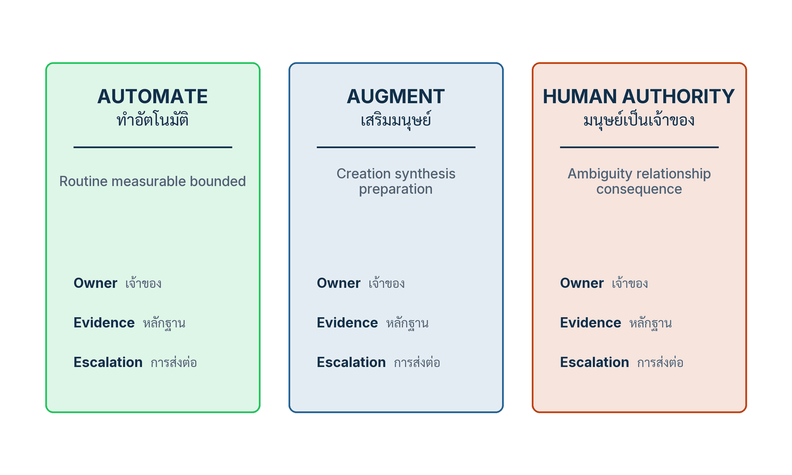

ในบทความนี้
- หนึ่งในสี่ของแรงงานอยู่ในอาชีพที่สัมผัส Generative AI — และทำไมนั่นไม่ใช่จำนวนคนตกงาน
- หน่วยของการออกแบบคือ task ไม่ใช่ตำแหน่ง — จำแนกห้าทาง และสามคอลัมน์ Automate / Augment / Human authority
- ประกอบบทบาทใหม่ให้เป็นความรับผิดชอบที่สูงขึ้น ไม่ใช่ภาระที่มากขึ้น
- ทักษะสี่ระดับ เวลาฝึกที่ถูกกันไว้ และเหตุผลที่หลักสูตร Prompt อย่างเดียวไม่ใช่ Reskilling
- สัญญาประชาคมของงาน — เสียงพนักงาน ข้อมูล การแจ้ง การอุทธรณ์ การโยกย้าย และการแบ่งผลผลิต
- เวิร์กช็อป Role redesign and workforce compact — ตารางให้คะแนน task และตารางข้อตกลง
- ตัวชี้วัดสำคัญพร้อมช่อง Scorecard และรูปแบบความล้มเหลวเก้าแบบ
- ก้าวต่อไป — จากบทบาทและทักษะที่ออกแบบใหม่ สู่ชิ้นส่วนที่ใช้ซ้ำได้ทั้งองค์กร
In this post
- One in four workers are in occupations exposed to generative AI — and why that is not a count of jobs lost
- The unit of design is the task, not the job title — the five-way classification, and the three columns Automate / Augment / Human authority
- Reassemble the role into higher responsibility, not a larger workload
- Four skill tiers, protected practice time, and why a prompt course alone is not reskilling
- The workforce compact — worker voice, data, notice, appeal, redeployment, and sharing the gains
- The Role redesign and workforce compact working session — the task-scoring table and the commitments table
- The metrics that matter, with a Scorecard column, and nine failure patterns
- The road ahead — from redesigned roles and skills to components the whole organisation can reuse
🤔 ถ้า 1 ใน 4 ของแรงงานทั่วโลกอยู่ในอาชีพที่ "สัมผัส" generative AI แปลว่าจะมีคนตกงาน 1 ใน 4 หรือไม่?
ตอนที่แล้ว What the Evidence Says ปิดท้ายด้วยปมที่ผมจงใจค้างไว้ เมื่อ AI เข้าไปรับงานกรณีปกติซึ่งเคยเป็นสนามฝึกของมือใหม่ องค์กรจะให้คนเรียนรู้จากที่ไหน และผลผลิตที่เพิ่มขึ้นจะถูกแบ่งกันอย่างไร สองคำถามนี้ไม่ใช่คำถามเชิงเทคนิค มันคือคำถามว่าด้วยการออกแบบงานและการแบ่งประโยชน์ ซึ่งเป็นหัวใจของบทที่ 11 และของบทความตอนนี้ทั้งตอน
คำตอบสั้น ๆ ของทั้งบทความคือ หน่วยที่ใช้ออกแบบกำลังคนได้จริงคือ task ไม่ใช่ตำแหน่ง ให้แยกบทบาทออกเป็นภารกิจย่อย จำแนกอนาคตของแต่ละภารกิจเป็นห้าทาง แล้วประกอบบทบาทใหม่ให้งานประจำที่หายไปถูกแทนด้วยความรับผิดชอบที่มีมูลค่าสูงกว่า ไม่ใช่ด้วยภาระที่มากกว่า — และเขียนข้อตกลงเรื่องข้อมูล การแจ้ง การอุทธรณ์ การโยกย้าย และการแบ่งเวลาที่ประหยัดได้ ให้ชัดตั้งแต่ก่อนที่ทางเลือกจะย้อนกลับไม่ได้
1. Exposure ไม่ใช่ Displacement
บทที่ 11 ของหนังสือ AI Transformation as an Organizational Core เปิดด้วยประโยคเดียวที่ทำหน้าที่เป็นทั้งข้อสรุปและคำเตือน: "The useful unit of workforce redesign is the task and the social choice is how authority opportunity risk and productivity gains are shared." — หน่วยที่ใช้ได้จริงของการออกแบบกำลังคนคือ task ส่วนทางเลือกทางสังคมคือจะแบ่งอำนาจ โอกาส ความเสี่ยง และผลผลิตที่เพิ่มขึ้นกันอย่างไร ประโยคนี้มีสองครึ่ง และองค์กรส่วนใหญ่ที่ผมได้เข้าไปช่วยงานทำครึ่งแรกอย่างตั้งใจ แล้วข้ามครึ่งหลังไปทั้งดุ้น
สิ่งที่มักเกิดขึ้นก่อนคือตัวเลข ผู้บริหารคนหนึ่งอ่านพาดหัวข่าวว่า "หนึ่งในสี่ของแรงงานโลกเสี่ยงถูก AI แทนที่" แล้วเดินเข้าห้องประชุมพร้อมโจทย์ว่าจะลดกำลังคนลงกี่เปอร์เซ็นต์ภายในสิ้นปี ปัญหาคือพาดหัวนั้นอ่านตัวเลขผิดชนิด
ดัชนีระดับโลกฉบับปรับปรุงขององค์การแรงงานระหว่างประเทศ (ILO) ประเมินว่าคนทำงาน หนึ่งในสี่ ทั่วโลกอยู่ในอาชีพที่มี generative AI exposure อยู่บ้าง[1] ตัวเลขนี้เป็นการวัด "ความสัมผัสเทคโนโลยี" ในระดับอาชีพ โดยให้คะแนนที่ระดับภารกิจย่อยแล้วรวมขึ้นมาเป็นอาชีพตามรหัส ISCO มันไม่ใช่จำนวนตำแหน่งที่หายไปจริง ไม่ใช่การนับการเลิกจ้าง และไม่ใช่การพยากรณ์การจ้างงาน การสัมผัสเทคโนโลยีกับการแทนที่งาน (exposure versus displacement) เป็นคนละเรื่องกัน และผลจริงยังต่างกันตามอาชีพ เพศ ระดับรายได้ของประเทศ ต้นทุนการนำไปใช้ และนโยบาย
ในดัชนีเดียวกันนั้น มีเพียง 3.3 เปอร์เซ็นต์ ของการจ้างงานโลกที่อยู่ในกลุ่มสัมผัสสูงสุด[1] และเพราะอาชีพส่วนใหญ่ยังมีภารกิจย่อยที่ต้องใช้คน รายงานจึงสรุปว่าแนวโน้มที่เป็นไปได้มากกว่าคือ การเปลี่ยนรูปของงาน ไม่ใช่การแทนที่ทั้งอาชีพ ระยะห่างระหว่าง 25 เปอร์เซ็นต์กับ 3.3 เปอร์เซ็นต์คือระยะห่างระหว่างคำว่า "อาจได้รับผลบางส่วน" กับคำว่า "เกือบทั้งอาชีพอยู่ในเขตที่เครื่องทำแทนได้" และมันคือระยะห่างที่พาดหัวข่าวยุบหายไปเสมอ
ตัวเลขที่สามในดัชนีเดียวกันเป็นตัวที่ผมคิดว่าสำคัญที่สุดสำหรับการออกแบบ กลุ่มสัมผัสสูงสุดไม่ได้กระจายตัวเท่ากัน — คิดเป็น 4.7 เปอร์เซ็นต์ ของการจ้างงานหญิง เทียบกับ 2.4 เปอร์เซ็นต์ ของการจ้างงานชาย[1] นี่คือเหตุผลที่ตัวชี้วัด "Access ตามกลุ่ม" ในหัวข้อ 7 ไม่ใช่ส่วนเกินเพื่อความสวยงามของรายงาน ESG แต่เป็นตัวชี้วัดชั้นหนึ่งของบทนี้ และในทำนองเดียวกัน สัดส่วนการสัมผัสก็ต่างกันมากตามระดับรายได้ของประเทศ — ราว 11 เปอร์เซ็นต์ ของการจ้างงานในประเทศรายได้ต่ำ เทียบกับ 34 เปอร์เซ็นต์ ในประเทศรายได้สูง[1] ตัวเลขระดับโลกจึงไม่มีทางเป็นตัวแทนขององค์กรไทยองค์กรใดองค์กรหนึ่งได้เลย
| ดัชนี Exposure บอกอะไร | และบอกอะไรไม่ได้ |
|---|---|
| ภารกิจย่อยชนิดใดในอาชีพหนึ่ง ๆ อาจ ได้รับผลจากเทคโนโลยีปัจจุบัน | องค์กรหนึ่งจะลดตำแหน่งลงกี่ตำแหน่ง |
| ความเข้มข้นของการสัมผัสต่างกันอย่างไรระหว่างกลุ่มประชากรและกลุ่มประเทศ | คนกลุ่มใดจะตกงานจริงและเมื่อไร |
| พื้นที่ที่ควรเอางบวิเคราะห์งานและงบพัฒนาทักษะไปลงก่อน | ลำดับการเลิกจ้าง หรือเพดานอัตรากำลังของหน่วยงานใด |
| สมมติฐานสำหรับการตั้งคำถาม | หลักฐานสำหรับการตัดสินใจเรื่องคน |
ยังมีมาตรวัดอีกชุดที่ถูกหยิบมาปนกันบ่อยมาก OECD ประเมินไว้ตั้งแต่ปี 2023 ว่าอาชีพที่มีความเสี่ยงสูงสุดต่อการทำงานอัตโนมัติคิดเป็นราว 27 เปอร์เซ็นต์ ของการจ้างงานในกลุ่มประเทศ OECD[2] เลข 27 นี้ไม่ใช่ญาติของเลข 3.3 ของ ILO และห้ามวางเทียบกันราวกับเป็นมาตรเดียวกัน — OECD ให้คะแนน ความเสี่ยงต่อการทำงานอัตโนมัติ ของอาชีพโดยรวมเทคโนโลยีหลายชนิดรวมถึง AI ส่วน ILO ให้คะแนน การสัมผัส generative AI ระดับภารกิจย่อย คนละปี คนละประชากร คนละนิยาม และทั้งคู่เป็นค่าประเมินความเสี่ยง ไม่ใช่การพยากรณ์การจ้างงาน รายงาน OECD ฉบับเดียวกันยังระบุเองว่าผลกระทบต่อระดับการจ้างงานที่สังเกตได้จริงจนถึงเวลานั้น "ยังจำกัด"
เมื่อวางตัวเลขทั้งหมดเรียงกัน ข้อสรุปเชิงปฏิบัติมีข้อเดียวคือ Exposure เป็น คำถามสำหรับการสืบค้น ไม่ใช่ สูตรสำหรับลดคน และนี่คือหลักปฏิบัติข้อแรกจากห้าข้อของบทนี้
💡 มุมมองของผม: ถ้าจะให้เลือกประโยคเดียวจากบทที่ 11 ไปติดไว้ในห้องประชุมฝ่ายบุคคล ผมเลือกหลักปฏิบัติข้อ 1 ตามถ้อยคำของหนังสือเอง — "ออกแบบ Task ก่อนเปลี่ยน Headcount Exposure เป็นคำถาม ไม่ใช่สูตรลดคน" ลำดับของสองสิ่งนี้เป็นเรื่องคอขวดทางเทคนิคน้อยกว่าที่คิด แต่เป็นเรื่องว่าองค์กรจะใช้ตัวเลขระดับโลกมาแทนการวิเคราะห์งานของตัวเองหรือไม่ ผมยังไม่เคยเห็นองค์กรใดที่ประกาศตัวเลขลดคนก่อน แล้ววิเคราะห์ task ทีหลังได้ผลลัพธ์ที่ดี เพราะเมื่อประกาศไปแล้ว การวิเคราะห์ที่ตามมาจะกลายเป็นการหาเหตุผลรองรับตัวเลข ไม่ใช่การหาความจริง
หลักปฏิบัติห้าประการของบทนี้
ผมยกข้อ 1 ไว้ข้างบนแล้ว อีกสี่ข้อที่เหลือคือโครงของบทความทั้งตอน และผมจะพาเดินทีละข้อตามลำดับหัวข้อ ข้อ 2 ฝึกกับ Decision และ Workflow จริง — Course Completion ไม่เท่ากับ Proficiency ซึ่งเป็นเรื่องของหัวข้อ 4 ข้อ 3 รักษา Human Authority ในงานมีผลกระทบ — ระบุ Accountability และ Contestability ให้ชัด ซึ่งอยู่ในหัวข้อ 2 และ 3 ข้อ 4 มี Notice Voice Privacy และ Remedy — Trust ขึ้นกับ Procedural Fairness ซึ่งเป็นแกนของหัวข้อ 5 และข้อ 5 แบ่ง Gain อย่างตั้งใจ — วัด Job Quality ควบคู่ Output ซึ่งวิ่งผ่านหัวข้อ 5 ไปจนถึงตารางตัวชี้วัดในหัวข้อ 7
ห้าข้อนี้อ่านแล้วดูเหมือนคำขวัญ แต่เมื่อแปลงเป็นข้อผูกพันที่มีเจ้าของ มีหลักฐาน และมีวันทบทวน มันคือสิ่งที่บทนี้เรียกว่า สัญญาประชาคมของงาน — และเป็นสิ่งที่แยกการเปลี่ยนผ่านองค์กรด้วย AI (AI transformation) ที่คนยังอยากทำงานด้วย ออกจากการเพิ่มผลิตภาพที่ไล่คนออกทางอ้อม
2. หน่วยของการออกแบบคือ task ไม่ใช่ตำแหน่ง
คำถามว่า "ตำแหน่งไหนจะหายไป" เป็นคำถามที่หยาบเกินกว่าจะตอบได้ เพราะทุกตำแหน่งประกอบด้วยภารกิจหลายชนิดปนกัน หนังสือแยกองค์ประกอบของบทบาทหนึ่ง ๆ ไว้เจ็ดอย่าง คือ งานประจำ การคาดการณ์ ดุลยพินิจ ความสัมพันธ์ งานทางกายภาพ การจัดการข้อยกเว้น และความรับผิดชอบ AI อาจทำบางส่วนแทน เสริมบางส่วน และ — ข้อนี้คนมองข้ามบ่อยที่สุด — ทำให้ภารกิจที่มนุษย์ยังเป็นเจ้าของ สำคัญขึ้น ไม่ใช่น้อยลง
| Role component | ตัวอย่างที่พบในบทบาทจริง | คำถามที่ต้องตั้งก่อนออกแบบ |
|---|---|---|
| Routine processing | คัดแยกเอกสาร กรอกข้อมูลซ้ำ ตรวจรายการตามเช็กลิสต์ | วัดได้ มีขอบเขตชัด และข้อมูลพร้อมหรือไม่ |
| Prediction | ประเมินแนวโน้ม จัดลำดับความเร่งด่วน คาดการณ์ปริมาณงาน | มีค่าฐานให้เทียบหรือไม่ และใครรับผลเมื่อคาดผิด |
| Judgment | ตัดสินกรณีที่มีข้อโต้แย้ง ชั่งน้ำหนักคุณค่าที่ขัดกัน | ผลกระทบย้อนกลับได้หรือไม่ และใครเป็นเจ้าของคำตัดสิน |
| Relationships | อธิบายการปฏิเสธ รับมืออารมณ์ ต่อรอง สร้างความไว้วางใจ | คุณค่าที่แท้จริงอยู่ที่ข้อความ หรืออยู่ที่คนที่รับผิดชอบข้อความ |
| Physical work | ตรวจหน้างาน ติดตั้ง ซ่อมบำรุง เก็บตัวอย่าง | ข้อจำกัดทางกายภาพเปลี่ยนสมการต้นทุนอย่างไร |
| Exception handling | กรณีที่ไม่เข้าเกณฑ์ใดเลย ข้อมูลขัดกัน ลูกค้าไม่พอใจ | ปริมาณข้อยกเว้นจะเพิ่มหรือลดหลังออกแบบใหม่ |
| Accountability | การมีชื่ออยู่บนคำตัดสิน และการตอบคำถามเมื่อผิดพลาด | ย้ายไปไหนไม่ได้ — แล้วใครถือไว้หลังออกแบบใหม่ |
เจ็ดองค์ประกอบนี้คือเหตุผลที่หนังสือให้เริ่มจาก การแยกงานเป็นภารกิจย่อย (task decomposition) สำหรับแต่ละบทบาท ให้ระบุเจ็ดช่องต่อหนึ่งภารกิจ คือ Task, Frequency, Time, Knowledge, Error Consequence, Data และ Feedback ช่องสุดท้ายเป็นช่องที่ทีมส่วนใหญ่ลืม — ภารกิจนั้นมี feedback กลับมาหรือไม่ว่าทำถูกหรือผิด และกลับมาช้าแค่ไหน ถ้าไม่มี feedback เลย ทั้งคนและระบบก็ไม่มีทางเรียนรู้จากภารกิจนั้นได้ และการเอา AI ไปใส่ก็จะเป็นการเร่งความเร็วของสิ่งที่ไม่มีใครรู้ว่าถูกหรือผิด
จำแนกอนาคตของแต่ละภารกิจเป็นห้าทาง
เมื่อแยกภารกิจเสร็จ ขั้นถัดไปคือจำแนกอนาคตของแต่ละภารกิจเป็นหนึ่งในห้าทาง โดยไม่อนุญาตให้ตอบว่า "แล้วแต่" ห้าทางนั้นคือ ยกเลิก (eliminate) — งานที่ไม่ควรมีอยู่ตั้งแต่แรก และมักถูกค้นพบตอนทำแผนที่ task นี่เอง อัตโนมัติ (automate) — งานประจำที่วัดได้และมีขอบเขต เสริม (augment) — งานสร้าง สังเคราะห์ และเตรียมข้อมูล ที่คนยังเป็นผู้ตัดสิน สร้างใหม่ (create) — ภารกิจที่ยังไม่เคยมีในบทบาทเดิม เช่น การดูแลคุณภาพของสิ่งที่ระบบเสนอ และ คงไว้ภายใต้อำนาจมนุษย์ (retain under human authority) — งานที่มีความคลุมเครือ ความสัมพันธ์ และผลกระทบ
ทางที่ถูกใช้น้อยที่สุดในทางปฏิบัติคือ "ยกเลิก" ทั้งที่มันเป็นทางที่ให้ผลตอบแทนเร็วที่สุดและถูกที่สุด องค์กรจำนวนมากเริ่มโครงการ AI แล้วพบว่ารายงานที่ทีมใช้เวลาทำเดือนละสองวันนั้นไม่มีใครเปิดอ่านมาสองปีแล้ว การเอา AI ไปเขียนรายงานนั้นให้เร็วขึ้นสิบเท่าไม่ใช่การเปลี่ยนผ่าน มันคือการทำสิ่งที่ไม่ควรทำอยู่แล้วให้เร็วขึ้น
ผมย้ำเรื่องหนึ่งที่หนังสือจงใจแยกไว้และมักถูกยุบรวมกันในสไลด์ของที่ปรึกษา — บันไดจำแนกห้าทางนี้ไม่ใช่สิ่งเดียวกับสามคอลัมน์ในรูปที่ 15 การจำแนกห้าทางคือ ขั้นตอนการตัดสิน ว่าภารกิจแต่ละอันจะไปทางไหน ส่วนสามคอลัมน์คือ พื้นผิวสำหรับออกแบบ ว่าเมื่อจัดวางเสร็จแล้ว แต่ละกลุ่มต้องมีเจ้าของ หลักฐาน และเส้นทางส่งต่ออะไรบ้าง อย่ารวมสองอย่างนี้เป็นภาพเดียว และอย่าเรียงเลขใหม่
{kind=link}

รูปที่ 15 เป็นรูปที่เรียบจนดูเหมือนไม่มีอะไร แต่โครงสร้างของมันมีข้อความอยู่สองชั้น ชั้นแรกคือบรรทัดขอบเขตใต้หัวคอลัมน์: AUTOMATE รับงานที่ เป็นงานประจำ วัดได้ และมีขอบเขต, AUGMENT รับงาน สร้าง สังเคราะห์ เตรียมข้อมูล, และ HUMAN AUTHORITY รับงานที่มี ความคลุมเครือ ความสัมพันธ์ และผลกระทบ สามบรรทัดนี้เป็นเกณฑ์ ไม่ใช่คำอธิบาย ถ้าภารกิจหนึ่งเข้าเกณฑ์ของคอลัมน์ซ้ายไม่ครบทั้งสามคำ มันยังไม่ควรอยู่ในคอลัมน์ซ้าย
ชั้นที่สองคือสามแถวที่เหมือนกันในทุกคอลัมน์ — Owner, Evidence, Escalation นี่คือส่วนที่ผมเห็นคนวาดตกหล่นบ่อยที่สุด เพราะมันดูเหมือนงานเอกสาร แต่ความหมายของมันคือ ทุกภารกิจต้องมีชื่อคนที่รับผิดชอบ ต้องมีหลักฐานที่บอกว่าทำได้ดีหรือไม่ และต้องมีเส้นทางส่งต่อเมื่อเกินขอบเขต ไม่ว่ามันจะอยู่คอลัมน์ไหน การที่ภารกิจหนึ่งถูกทำอัตโนมัติไม่ได้แปลว่ามันไม่มีเจ้าของ — แปลว่าเจ้าของเปลี่ยนหน้าที่จากผู้ทำเป็นผู้กำกับดูแล และนั่นคือ การกำกับดูแลโดยมนุษย์ (human oversight) ตามความหมายของหนังสือ คือบทบาทที่ถูกออกแบบให้มีข้อมูล ความสามารถ เวลา อำนาจ และปุ่มที่กดได้จริงเพื่อเข้าแทรก ไม่ใช่ช่องอนุมัติเชิงพิธีกรรม
คำที่ต้องนิยามคู่กันคือ ความรับผิดรับชอบ (accountability) ซึ่งหนังสือกำหนดไว้ชัดว่าคือความเป็นเจ้าของคำตัดสินและผลของมัน โดยมีการตอบคำถาม หลักฐาน การส่งต่อ การเยียวยา และผลตามมารองรับ — ไม่ใช่ความรับผิดชอบที่โยนให้โมเดล ประโยคนี้ฟังดูชัดเจนจนน่าเบื่อ แต่ผมเคยอ่านเอกสารออกแบบระบบที่เขียนว่า "ระบบจะรับผิดชอบการจัดลำดับความเร่งด่วน" มาแล้วหลายฉบับ ซึ่งในทางกฎหมายและในทางปฏิบัติแปลว่าไม่มีใครรับผิดชอบเลย
เมื่อวางสามคอลัมน์เสร็จ สิ่งที่เราออกแบบจริง ๆ ไม่ใช่ "การแทนที่" แต่คือ ความเกื้อหนุนระหว่างคนกับ AI (human–AI complementarity) ซึ่งหนังสือนิยามว่าเป็นการแบ่งงานเฉพาะภารกิจ ที่ผลรวมของทั้งคู่ดีกว่าทางเลือกคนล้วนและ AI ล้วนตามความเป็นจริง บนผลลัพธ์ที่องค์กรสนใจ นิยามนี้มีคำสำคัญคือ "ตามความเป็นจริง" — เทียบกับคนล้วนที่ทำงานในเงื่อนไขจริง ไม่ใช่คนล้วนในอุดมคติ และนี่คือที่มาของบรรทัดท้ายรูป: ให้ทดสอบทั้งคนล้วน AI ล้วน และคนบวก AI ซึ่งเป็นระเบียบวิธีที่ตอน #7 วางไว้แล้ว
3. ประกอบบทบาทใหม่ ไม่ใช่เพิ่มภาระ
ขั้นตอนที่ตัดสินว่าการออกแบบงานจะสำเร็จหรือล้มเหลวไม่ใช่ขั้นจำแนก แต่คือขั้นประกอบกลับ หนังสือเขียนไว้ประโยคเดียวและเป็นประโยคที่ผมอยากให้ทุกคนที่ทำโครงการนี้จำ: ให้ประกอบบทบาทใหม่เพื่อให้งานประจำที่ถูกยกออกไปนั้น ถูกแทนด้วยความรับผิดชอบที่มีมูลค่าสูงกว่าอย่างชัดแจ้ง ไม่ใช่เพียงภาระงานที่มากขึ้น
ความล้มเหลวแบบเงียบที่พบบ่อยที่สุดมีหน้าตาแบบนี้ ทีมหนึ่งเอา AI มาช่วยร่างเอกสาร เวลาที่ใช้ต่อชิ้นลดลงจริง หัวหน้าเห็นตัวเลขแล้วเพิ่มปริมาณงานต่อคนตามสัดส่วนที่ประหยัดได้ ปลายไตรมาสตัวชี้วัดผลผลิตดีขึ้น แต่แบบสำรวจความผูกพันแย่ลง อัตราการลาออกในกลุ่มที่ใช้เครื่องมือมากที่สุดสูงกว่ากลุ่มอื่น และคุณภาพงานที่ปลายทางเริ่มถดถอยแบบที่ยังไม่มีใครวัด สิ่งที่เกิดขึ้นคือองค์กรแปลง "เวลาที่ประหยัดได้" เป็น "โควตาที่เพิ่มขึ้น" โดยอัตโนมัติ โดยไม่มีใครเคยตัดสินใจเรื่องนั้นอย่างเป็นทางการ
ทางแก้ไม่ใช่การห้ามเพิ่มเป้าหมาย แต่คือการบังคับให้การจัดสรรเวลาที่ประหยัดได้เป็น คำตัดสินที่มีคนเซ็นชื่อ ซึ่งเป็นเรื่องของหัวข้อ 5 และในระดับการออกแบบบทบาท ทางแก้คือทุกครั้งที่เราลบภารกิจออกจากบทบาทหนึ่ง ต้องเขียนลงไปว่าภารกิจใดเข้ามาแทน และภารกิจใหม่นั้นต้องเป็นความรับผิดชอบที่สูงขึ้น ไม่ใช่ปริมาณเดิมที่มากขึ้น ถ้าเขียนไม่ออก แปลว่ายังออกแบบไม่เสร็จ
สิ่งที่การทดลองช่วงต้นบอกเรา — และไม่ได้บอก
งาน Humans in the Loop ของ MIT Industrial Performance Center สังเคราะห์จากการสัมภาษณ์และเวิร์กช็อปกับบริษัทมากกว่า 50 แห่ง ในกลุ่มสุขภาพ ประกัน การเงิน การผลิต และค้าปลีก[4] ก่อนจะอ่านผลของมัน ต้องอ่านขอบเขตของมันก่อน นี่คือการเลือกกรณีตัวอย่างช่วงต้นโดยเจตนา (purposive) ไม่ใช่การสุ่มตัวอย่างเชิงสถิติ ผลที่ได้จึงเป็น สัญญาณสำหรับการออกแบบ ไม่ใช่ค่าประมาณเชิงสถิติของประชากรทั้งหมด ห้ามแปลงข้อสังเกตของรายงานนี้เป็นอัตราส่วนหรือความชุก และห้ามเขียนในสไลด์ว่า "บริษัทส่วนใหญ่พบว่า…"
ภายใต้ข้อจำกัดนั้น สิ่งที่หนังสือสรุปจากรายงานคือ การทดลองช่วงต้นของบริษัทเหล่านี้มุ่งไปที่สามเรื่อง — คอขวด (bottlenecks), การสังเคราะห์ของผู้เชี่ยวชาญ (expert synthesis) และ เส้นโค้งการเรียนรู้ (learning curves) โดยตัวรายงานเองเรียกรูปแบบทั้งสามนี้ว่า the bottleneck problem, the cafeteria problem และ the learning-curve problem และมีข้อสังเกตเพิ่มว่างานเชิงวิชาชีพและงานเชิงเทคนิคบางส่วนขยับไปทาง supervisory control คือคนเปลี่ยนบทบาทจากผู้ลงมือเป็นผู้กำกับผลลัพธ์ของระบบ ทั้งหมดนี้เป็นรูปแบบช่วงต้น ยังไม่ใช่ผลลัพธ์ที่ตกผลึก
สามเรื่องนี้ใช้เป็นตัวช่วยเลือกจุดตั้งต้นได้ดีมาก และผมใช้มันบ่อยเวลาที่ทีมถามว่า "เริ่มตรงไหนดี" คำตอบไม่ใช่ "เริ่มที่งานที่ใช้เวลามากที่สุด" แต่คือ "เริ่มที่คอขวดของกระบวนงาน" เพราะการเร่งขั้นตอนที่ไม่ใช่คอขวดจะไม่เปลี่ยนเวลารวมของกระบวนงานเลย ซึ่งเป็นบทเรียนเก่าจากวิศวกรรมกระบวนการที่ AI ไม่ได้ยกเลิก และเป็นเหตุผลที่ตอน #6 ยืนยันว่าต้องออกแบบกระบวนงานใหม่ทั้งสาย (workflow redesign) ไม่ใช่ปรับทีละขั้น
เส้นโค้งการเรียนรู้คือหนี้ที่มองไม่เห็น
เรื่องที่สามคือเรื่องที่ผมกังวลที่สุดในระยะยาว และเป็นสะพานตรงจากตอน #7 กรณีปกติที่ง่ายและซ้ำ ๆ คือสนามฝึกของมือใหม่ในเกือบทุกวิชาชีพ นักกฎหมายรุ่นใหม่โตจากการร่างสัญญามาตรฐานหลายร้อยฉบับ นักบัญชีโตจากการกระทบยอดที่ตรงไปตรงมา เจ้าหน้าที่สินไหมโตจากเคสที่ไม่มีข้อโต้แย้ง ถ้าเรายกกรณีเหล่านั้นให้ระบบทั้งหมดในวันเดียว เราจะได้ประสิทธิภาพเพิ่มขึ้นในปีนี้ และได้ช่องว่างความสามารถที่ไม่มีใครเติมได้ในอีกห้าปี
รายงาน MIT IPC ยังชี้ความเสี่ยงคู่กันคือ mental offloading — การถ่ายภาระคิดไปให้ระบบจนทักษะการคิดเองถดถอย ซึ่งเป็นความเสี่ยงต่อการเรียนรู้ ไม่ใช่ต่อผลผลิตระยะสั้น และเป็นเหตุผลที่ตัวชี้วัด "Time to Proficiency" ในตารางหัวข้อ 7 ต้องถูกวัดจริง ไม่ใช่ประมาณเอา
ทางออกที่ผมใช้และเห็นว่าได้ผลคือ อย่ายกกรณีฝึกทั้งหมดออกไป ให้กันสัดส่วนหนึ่งของกรณีปกติไว้เป็นงานที่คนทำเองโดยไม่ใช้ระบบ แล้วประกาศไว้ในเอกสารออกแบบว่าสัดส่วนนั้นมีไว้เพื่อการสร้างทักษะ ไม่ใช่เพราะระบบทำไม่ได้ ถ้าไม่เขียนเหตุผลกำกับไว้ สัดส่วนนี้จะถูกตัดในรอบปรับปรุงประสิทธิภาพครั้งถัดไปเสมอ เพราะจากมุมของตารางต้นทุน มันดูเหมือนความสิ้นเปลืองล้วน ๆ
4. ทักษะต้องตามหลัง Workflow ที่ออกแบบใหม่
ลำดับของประโยคนี้สำคัญพอ ๆ กับเนื้อของมัน หนังสือเขียนว่า ทักษะต้องตามหลัง workflow ที่ออกแบบใหม่ ไม่ใช่นำหน้า องค์กรจำนวนมากทำกลับด้าน คือซื้อหลักสูตร AI ให้พนักงานทั้งองค์กรก่อน แล้วค่อยคิดว่าจะเอาไปใช้กับกระบวนงานไหน ผลลัพธ์คือคนสองหมื่นคนผ่านคอร์สออนไลน์สามชั่วโมง ได้ใบประกาศ และกลับไปทำงานแบบเดิมทุกอย่าง เพราะไม่มีอะไรในงานประจำวันของเขาเปลี่ยน
เมื่อ workflow ถูกออกแบบแล้ว ทักษะที่ต้องสร้างจะแยกออกเป็นสี่ระดับที่ต่างกันชัดเจน และแต่ละระดับต้องการวิธีสอนคนละแบบ
| Skill tier | ใคร | ต้องได้อะไร | วัดด้วยอะไร |
|---|---|---|---|
| General AI literacy | ทุกคนในองค์กร | ความสามารถและข้อจำกัดของเครื่องมือ กฎการใช้ข้อมูล Hallucination ความมั่นคงปลอดภัย และเส้นทาง Escalation | ตอบได้ว่างานชิ้นไหนห้ามใส่ข้อมูลอะไร และเมื่อสงสัยต้องส่งต่อให้ใคร |
| Role-specific proficiency | ผู้ปฏิบัติงานตามบทบาทที่ถูกออกแบบใหม่ | ตรวจสอบผลลัพธ์เป็น วางกรอบการตัดสินใจเป็น กำกับเครื่องมือเป็น จัดการข้อยกเว้นเป็น และบันทึกความรับผิดรับชอบเป็น | สาธิตบนงานจริงที่มีคำเฉลย ไม่ใช่แบบทดสอบปรนัย |
| Leadership literacy | ผู้บริหารที่ตัดสินเรื่องความเสี่ยงและงบประมาณ | ความเข้าใจเชิงเทคนิคและเศรษฐศาสตร์มากพอจะกำหนด Risk Appetite และการลงทุน | อ่าน Dashboard แล้วบอกได้ว่าตัวเลขไหนคือหลักฐาน ตัวเลขไหนคือค่าประมาณ |
| Domain-expert evaluation | ผู้เชี่ยวชาญเนื้องานที่เป็นเจ้าของมาตรฐาน | ทักษะการประเมินระบบ และการออกแบบกระบวนการ | สร้างชุดประเมินของโดเมนตัวเองได้ และอธิบายได้ว่าเกณฑ์ผ่านมาจากไหน |
นอกเหนือจากสี่ระดับนี้ หนังสือระบุกลุ่มที่ห้าไว้ต่างหากคือ ทีม AI เอง ซึ่งต้องมีทักษะสามด้านที่มักขาด — Operations (การดูแลระบบที่ทำงานจริงทุกวัน), Human Factors (การออกแบบให้คนใช้ได้จริงและไม่ถูกกดให้กดผ่าน) และ Change Capability (ความสามารถพาองค์กรเปลี่ยน) ทีมที่เก่งโมเดลแต่ไม่มีสามอย่างนี้จะส่งมอบระบบที่ถูกต้องทางเทคนิคและไม่มีใครใช้
และสิ่งที่ขาดไม่ได้ที่สุดคือข้อสุดท้าย — พนักงานหน้างานต้องมี Protected Time สำหรับฝึกกับงานจริง คำว่า protected แปลว่าถูกกันไว้ในตารางงานและได้รับการปกป้องจากภาระประจำ ไม่ใช่ "เรียนตอนว่าง" ซึ่งแปลว่าไม่ได้เรียน ในองค์กรที่วัดผลด้วยจำนวนชิ้นงานต่อวัน การไม่กันเวลาไว้อย่างเป็นทางการเท่ากับการสั่งให้พนักงานเลือกระหว่างการเรียนรู้กับตัวชี้วัดของตัวเอง และไม่มีใครเลือกอย่างแรก
หลักสูตร Prompt อย่างเดียวไม่ใช่ Reskilling
นี่คือหลักปฏิบัติข้อ 2 ของบทนี้ — ฝึกกับ Decision และ Workflow จริง Course Completion ไม่เท่ากับ Proficiency หนังสือให้สูตรที่ตรงไปตรงมาว่าการสร้างความสามารถจริงต้องประกอบด้วยห้าอย่างรวมกัน คือ การสอนสั้น ๆ, การฝึกภายใต้การดูแล, Assignment ที่มาจากงานจริง, Coaching และการสาธิตความสามารถให้เห็น
ผมขอเน้นข้อที่สาม เพราะมันเป็นข้อที่แยกโครงการที่ได้ผลออกจากโครงการที่ไม่ได้ผลอย่างชัดที่สุด Assignment ต้องมาจากงานจริงของคนคนนั้น ไม่ใช่เคสตัวอย่างในสไลด์ เหตุผลไม่ใช่เรื่องแรงจูงใจอย่างเดียว แต่เป็นเรื่องว่าเราต้องการหลักฐานว่าเขาทำงาน ของเขา ได้ดีขึ้น ไม่ใช่หลักฐานว่าเขาทำแบบฝึกหัดได้ และการวัดด้วยการสาธิตความสามารถบนงานจริงยังให้ของแถมที่มีค่ามาก คือมันเผยให้เห็นว่ากระบวนงานที่เราออกแบบไว้บนกระดาษมีจุดที่ใช้ไม่ได้จริงตรงไหนบ้าง
คำถามที่ตามมาเสมอคือ "แล้วต้องใช้เวลาเท่าไรถึงจะเรียกว่าเป็น proficient" คำตอบตรงไปตรงมาคือไม่มีใครบอกแทนองค์กรได้ และนั่นคือเหตุผลที่ Time to Proficiency เป็นตัวชี้วัดที่ต้องวัด ไม่ใช่ค่าคงที่ที่ต้องหามาจากที่อื่น ให้วัดจากรุ่นแรกด้วยเกณฑ์สาธิตที่ประกาศไว้ล่วงหน้า แล้วใช้ค่านั้นวางแผนรุ่นถัดไป องค์กรที่ทำแบบนี้จะรู้ภายในสองรอบว่าหลักสูตรของตัวเองใช้ได้จริงหรือไม่ ส่วนองค์กรที่วัดด้วยอัตราการจบหลักสูตรจะไม่มีวันรู้เลย
5. สัญญาประชาคมของงาน
ถึงจุดนี้เรามีบทบาทที่ออกแบบใหม่และแผนทักษะที่ผูกกับงานจริงแล้ว สิ่งที่ยังขาดคือครึ่งหลังของประโยคเปิดบท — จะแบ่งอำนาจ โอกาส ความเสี่ยง และผลผลิตที่เพิ่มขึ้นกันอย่างไร ครึ่งนี้ไม่มีคำตอบทางเทคนิค มันเป็นคำตอบที่ผู้นำต้องเลือก และการไม่เลือกก็เป็นการเลือกอย่างหนึ่ง
เสียงและการมีส่วนร่วมของพนักงาน — ก่อนที่ทางเลือกจะย้อนกลับไม่ได้
หนังสือใช้คำว่า เสียงและการมีส่วนร่วมของพนักงาน (worker voice) ในความหมายที่กว้างกว่าการ "รับฟังความเห็น" มาก คือการมีส่วนร่วมอย่างมีความหมายของผู้ปฏิบัติงานตั้งแต่ขั้นกำหนดปัญหา ออกแบบ ทดสอบ ติดตาม ออกแบบงานใหม่ วางแผนทักษะ ไปจนถึงการแบ่งปันประโยชน์จากการเปลี่ยนผ่าน สังเกตว่ารายการนี้เริ่มที่ "กำหนดปัญหา" ซึ่งเป็นขั้นที่พนักงานหน้างานถูกเชิญเข้าห้องน้อยที่สุด ทั้งที่เป็นขั้นที่ความรู้ของเขามีค่าที่สุด
รายงาน Bringing Worker Voice Into Generative AI ของ MIT Sloan สร้างจากการสัมภาษณ์มากกว่า 50 ครั้ง[5] และเสนอสี่ช่วงของการดึงเสียงพนักงานเข้ามา คือ การนิยามปัญหา, การร่วมออกแบบเทคโนโลยีและกระบวนงาน, การให้ความรู้และฝึกทักษะใหม่ และการเปลี่ยนผ่านอย่างเป็นธรรม พร้อมข้อสังเกตว่าการทดลองที่เริ่มจากพนักงานเองมักให้โจทย์ที่ตรงจุดกว่า และการมีองค์คณะร่วมออกแบบช่วยให้ข้อกังวลถูกจับได้ก่อนที่ระบบจะขึ้น ทั้งหมดนี้เป็นแนวทางที่ต้องปรับให้เข้ากับโครงสร้างตัวแทนพนักงาน แรงงานสัมพันธ์ วัฒนธรรม และกฎหมายของแต่ละที่ — บริบทของบริษัทอเมริกันที่มีสหภาพกับบริษัทไทยที่มีคณะกรรมการสวัสดิการนั้นไม่เหมือนกัน และไม่ควรลอกวิธีมาตรง ๆ
จังหวะเวลาสำคัญไม่แพ้วิธี หนังสือกำหนดไว้ว่าให้รวมเสียงพนักงานเข้ามา ก่อนที่ทางเลือกเชิงกระบวนงานจะย้อนกลับได้ยาก เพราะหลังจากที่ระบบถูกต่อเข้ากับฐานข้อมูลหลัก สัญญากับผู้ให้บริการถูกเซ็น และตัวชี้วัดใหม่ถูกประกาศแล้ว การรับฟังความเห็นจะกลายเป็นพิธีกรรม ไม่ใช่การออกแบบ
ห้าข้อผูกพันที่ต้องเขียนให้ชัด
หนังสือให้รายการสิ่งที่ต้องบอกพนักงานไว้ห้าข้อ และผมแนะนำให้เขียนเป็นเอกสารหน้าเดียวที่มีชื่อผู้รับผิดชอบกำกับ ไม่ใช่สไลด์ในการประชุมใหญ่ ห้าข้อคือ อะไรกำลังจะเปลี่ยน, ข้อมูลอะไรถูกเก็บ, ข้อมูลนั้นมีผลต่อการตัดสินใจเรื่องผลงานอย่างไร, การตัดสินใจใดยังเป็นของคน และการโต้แย้งข้อผิดพลาดทำได้อย่างไร ข้อที่สามกับข้อที่ห้าเป็นสองข้อที่มักถูกเขียนคลุมเครือที่สุด และเป็นสองข้อที่กำหนดว่าคนจะไว้ใจระบบหรือไม่
ควบคู่กันคือรายการสิ่งที่ต้องเฝ้าติดตาม ซึ่งหนังสือระบุไว้ห้าเรื่อง — ความเข้มข้นของงานที่เพิ่มขึ้น (work intensification), ความเป็นอิสระในการทำงาน (autonomy), ความเป็นส่วนตัว (privacy), ความปลอดภัยทางจิตใจ (psychological safety) และ ภาระการตรวจทานที่ไม่ได้รับค่าตอบแทน (uncompensated review labor) เรื่องสุดท้ายเป็นเรื่องที่ผมเห็นบ่อยที่สุดและถูกพูดถึงน้อยที่สุด เมื่อระบบเริ่มผลิตข้อเสนอจำนวนมาก งานตรวจทานจะไหลไปตกที่คนกลุ่มเดิมโดยไม่มีใครนับว่ามันเป็นงานเพิ่ม เพราะในสายตาของระบบวัดผล มันคือ "การกดปุ่มยืนยัน"
คำถามเรื่องการแบ่ง — และเหตุผลที่มันต้องมีคนเซ็นชื่อ
หลักปฏิบัติข้อ 5 ของบทนี้คือ แบ่ง Gain อย่างตั้งใจ วัด Job Quality ควบคู่ Output และเหตุผลอยู่ในประโยคเดียวของหนังสือ: Productivity Gain ไม่ถูกแบ่งปันเอง ผู้นำต้องตัดสินใจว่าเวลาที่พิสูจน์แล้วว่าประหยัดได้จริงจะถูกจัดสรรไปที่ใดในหกทาง — คุณค่าต่อลูกค้า, คุณภาพ, การเรียนรู้, ภาระงานที่ลดลง, การเติบโต หรือผลตอบแทนทางการเงิน และถ้าไม่มีคำตัดสินนั้น AI ก็อาจเพียงบีบตารางเวลาให้แน่นขึ้นและดันเป้าหมายให้สูงขึ้นเท่านั้น
ผมอยากให้สังเกตคำว่า "พิสูจน์แล้ว" ในประโยคนั้น เวลาที่ประหยัดได้ตามที่ผู้ขายประเมิน ไม่ใช่เวลาที่ประหยัดได้จริง และเวลาที่ประหยัดได้จริงในขั้นตอนเดียว ไม่ใช่เวลาที่ประหยัดได้ของทั้งกระบวนงาน — ถ้าเวลาร่างลดลงยี่สิบนาทีแต่เวลาตรวจเพิ่มขึ้นยี่สิบห้านาที องค์กรไม่ได้ประหยัดอะไรเลย เพียงแต่ย้ายภาระจากคนกลุ่มหนึ่งไปอีกกลุ่มหนึ่ง การตัดสินเรื่องการแบ่งจึงต้องเกิดหลังการวัดแบบครบสาย ไม่ใช่หลังการอ่านสไลด์ของผู้ขาย
เหตุผลที่ต้องทำเรื่องนี้อย่างเปิดเผยยังมีอีกข้อ ในการสำรวจของ OECD ปี 2023 แรงงานราว สามในห้าคน กังวลว่าจะตกงานเพราะ AI ภายในสิบปี โดยเฉพาะกลุ่มที่ทำงานกับ AI จริง[2] ตัวเลขนี้ไม่ใช่หลักฐานว่างานจะหาย — มันเป็นหลักฐานเรื่อง ความไว้วางใจ และเป็นการวัดความกังวลที่แสดงออก ไม่ใช่การวัดผลลัพธ์ แต่สำหรับคนที่ต้องออกแบบการเปลี่ยนผ่าน ความกังวลระดับนี้คือข้อเท็จจริงที่ต้องออกแบบรับ ไม่ใช่ความเข้าใจผิดที่ต้องแก้ด้วยการสื่อสาร และมันคือเหตุผลที่บทนี้วัด Trust และ Error-reporting Comfort เป็นตัวชี้วัดชั้นหนึ่ง คนที่กลัวว่าการรายงานข้อผิดพลาดของระบบจะย้อนกลับมาเป็นหลักฐานว่าตัวเองไม่จำเป็น จะไม่รายงานข้อผิดพลาดนั้น และองค์กรจะเสียสัญญาณที่แพงที่สุดที่มีไป
เส้นทางการออกแบบงานใหม่: ETDA เผยแพร่ AI Job Redesign Guideline ไว้บนคลังความรู้ของหน่วยงาน[6] ตามที่ playbook สรุปแนวทางฉบับนี้ไว้ เส้นทางประกอบด้วยห้าขั้น คือ วิเคราะห์ task → ออกแบบ workflow ระหว่างคนกับ AI → กำหนดระดับอำนาจ → ระบุความสามารถที่ต้องมี → ปรับ job description ใหม่ ซึ่งเข้ากันได้พอดีกับลำดับในหัวข้อ 2 ถึง 6 ของบทความนี้ ข้อควรระวังสองข้อ: หนึ่ง เมื่อผมตรวจสอบหน้าเผยแพร่เมื่อวันที่ 5 กันยายน 2569 หน้าดังกล่าวยังไม่ระบุเลขรุ่นหรือวันที่ประกาศใช้ จึงควรตรวจฉบับล่าสุดก่อนนำไปอ้างในเอกสารภายใน และสอง แนวทางระดับประเทศไม่ได้ทดแทนการหารือกับพนักงาน การตรวจสอบด้านกฎหมายแรงงาน และการวัดคุณภาพงานกับผลลัพธ์ในบริบทของตัวเอง
ภาษาไทย: "ไม่ทดสอบภาษาไทย" เป็นหนึ่งในรูปแบบความล้มเหลวที่หนังสือระบุชื่อไว้ตรง ๆ ไม่ใช่ข้อสังเกตของผม
ข้อมูลพนักงาน: ข้อมูลส่วนบุคคลของพนักงานยังอยู่ภายใต้พระราชบัญญัติคุ้มครองข้อมูลส่วนบุคคล พ.ศ. 2562 ซึ่งประกาศในราชกิจจานุเบกษา เล่ม 136 ตอนที่ 69 ก เมื่อวันที่ 27 พฤษภาคม 2562 และยังเป็นกฎหมายที่ใช้บังคับอยู่ ณ วันที่ 5 กันยายน 2569[7] ส่วนกฎหมาย AI เฉพาะของไทยนั้น ณ วันเดียวกันยังไม่มีฉบับที่ประกาศใช้ — หน้านโยบายของ ETDA ลงวันที่ 11 มิถุนายน 2568 บันทึกการเปิดรับฟังความเห็นต่อ (ร่าง) หลักการของกฎหมายว่าด้วยปัญญาประดิษฐ์ ซึ่งปิดรับเมื่อ 24 มิถุนายน 2568[8] และการที่ยังไม่มีกฎหมายเฉพาะไม่ได้ยกเลิกหน้าที่ที่มีอยู่เดิมภายใต้ PDPA กฎหมายคุ้มครองผู้บริโภค กฎหมายแรงงาน ทรัพย์สินทางปัญญา ความมั่นคงปลอดภัยไซเบอร์ กฎเฉพาะรายอุตสาหกรรม และสัญญา
บทความนี้และหนังสือต้นทางไม่ให้การตีความทางกฎหมาย ตัวบทอย่างเป็นทางการและที่ปรึกษากฎหมายไทยที่มีคุณสมบัติเป็นผู้ชี้ขาด การวางระบบหลักฐานชุดเดียวให้ตอบได้ทั้ง PDPA แนวทาง ETDA และกฎเกณฑ์ต่างประเทศ เป็นเรื่องของตอน #16 One Evidence System ไม่ใช่ตอนนี้
6. เวิร์กช็อป Role redesign and workforce compact
หนังสือให้เวิร์กช็อปไว้เป็นย่อหน้าเดียว ผมแตกออกเป็นเจ็ดขั้นเพื่อให้ใช้เป็นวาระประชุมได้จริง หนึ่ง เลือกหนึ่งบทบาทแล้วทำแผนที่ task สอง ให้คะแนนแต่ละ task ด้วยห้ามิติ คือ Frequency, Time, Error Consequence, Data Readiness และ Human Value สาม จำแนกเป็น Eliminate, Automate, Augment, Create หรือ Human-owned สี่ ประกอบ Future Role แล้วหา Workload Gap และ Accountability Gap ห้า กำหนด Skill, Practice Assignment และ Proficiency Evidence หก ตกลงข้อผูกพันเรื่อง Data Use, Notice, Appeal, Redeployment และ Feedback และเจ็ด ตั้งชื่อ Role Owner, Worker Representative, Pilot Cohort และ Review Date
ข้อสำคัญคือ หนึ่งบทบาทเท่านั้น ผมเคยเห็นองค์กรที่พยายามทำสิบสองบทบาทพร้อมกันในเวิร์กช็อปเดียวและได้ตารางที่ไม่มีใครกล้าตัดสินใจตาม เพราะไม่มีบทบาทไหนถูกวิเคราะห์ลึกพอ ให้เลือกบทบาทที่มีคนทำหลายคน มีงานประจำชัด และมีคนที่ยินดีเป็นตัวแทนเข้าห้อง แล้วทำให้จบทั้งเจ็ดขั้น
ขั้นที่ 1–3 · ตารางให้คะแนนและจำแนก task
ตารางข้างล่างเป็นตัวอย่างที่ผมกรอกด้วยบทบาทเจ้าหน้าที่พิจารณาสินไหมของ Aurora Assurance (กรณีสมมติจากหนังสือ) เพื่อให้เห็นว่าหน้าตาที่กรอกเสร็จควรเป็นอย่างไร คะแนนในตัวอย่างใช้เป็นระดับ สูง/กลาง/ต่ำ เพื่อความอ่านง่าย ส่วนแผ่นงานจริงขององค์กรควรใส่ตัวเลขที่วัดได้จริง เช่น จำนวนครั้งต่อสัปดาห์และนาทีต่อครั้ง ไม่ใช่ระดับที่ประเมินด้วยความรู้สึก
| Task | Frequency | Time | Error consequence | Data readiness | Human value | Classification |
|---|---|---|---|---|---|---|
| รับและจัดประเภทเอกสารเคลมที่เข้ามา | สูง | สั้น | ต่ำ | สูง | ต่ำ | Automate |
| ตรวจความครบถ้วนของเอกสารตามรายการที่กำหนด | สูง | สั้น | ต่ำ | สูง | ต่ำ | Automate |
| สรุปประวัติกรมธรรม์และประวัติเคลมก่อนพิจารณา | สูง | กลาง | กลาง | สูง | กลาง | Augment |
| เทียบเงื่อนไขกรมธรรม์กับข้อเท็จจริงของเคสที่ซับซ้อน | กลาง | ยาว | สูง | กลาง | สูง | Augment |
| ตัดสินอนุมัติหรือปฏิเสธเคลมที่มีข้อโต้แย้ง | กลาง | ยาว | สูง | ต่ำ | สูง | Human-owned |
| อธิบายเหตุผลการปฏิเสธกับผู้เอาประกันโดยตรง | กลาง | ยาว | สูง | ต่ำ | สูง | Human-owned |
| จัดทำรายงานสรุปรายเดือนที่ไม่มีผู้รับรายงานที่ระบุได้ | ต่ำ | ยาว | ต่ำ | สูง | ต่ำ | Eliminate |
| ตรวจคุณภาพข้อเสนอของระบบ และคัดกรณีเข้าชุดประเมิน | — | — | สูง | กลาง | สูง | Create |
สังเกตแถวสุดท้าย ช่อง Frequency กับ Time เป็นขีดกลาง เพราะภารกิจนั้นยังไม่มีอยู่ในบทบาทเดิม มันคือภารกิจที่ถูก สร้างขึ้น เพื่อรับงานที่หายไปจากสามแถวแรก และการที่มันมีอยู่ในตารางคือหลักฐานว่าการประกอบบทบาทใหม่เกิดขึ้นจริง ถ้าตารางของทีมใดมีเฉพาะ Automate กับ Human-owned โดยไม่มีแถว Create เลย แปลว่าเรากำลังลบงานออกจากบทบาทหนึ่งโดยไม่ได้ใส่อะไรกลับเข้าไป และนั่นคือการลดคนที่แต่งตัวเป็นการออกแบบงาน
ขั้นที่ 4 · ประกอบ Future Role และหาช่องว่าง
ขั้นนี้ทำบนกระดาษแผ่นเดียวที่มีสามคอลัมน์ คือ บทบาทเดิม, บทบาทใหม่ และช่องว่างที่เกิดขึ้น ช่องว่างที่ต้องหาให้เจอมีสองชนิด Workload Gap คือเวลาที่หายไปกับเวลาที่เพิ่มเข้ามาไม่เท่ากัน ถ้าเวลาที่เพิ่มมากกว่าเวลาที่ลด แปลว่าเรากำลังออกแบบภาระเพิ่มโดยเรียกมันว่าการยกระดับ และ Accountability Gap คือภารกิจที่ย้ายไปอยู่ฝั่งระบบแล้ว แต่ยังไม่มีใครถูกระบุชื่อให้รับผิดชอบผลของมัน
ในตัวอย่างข้างบน Accountability Gap อยู่ที่แถวแรกและแถวที่สองซึ่งถูกจัดเป็น Automate — ใครเป็นผู้รับผิดชอบเมื่อเอกสารถูกจัดประเภทผิดจนเคสไปเข้าคิวผิดสาย คำตอบต้องเป็นชื่อคน ไม่ใช่ชื่อระบบ และคน ๆ นั้นต้องมีทั้งข้อมูลที่จะเห็นความผิดพลาด เวลาที่จะดู และอำนาจที่จะสั่งหยุด ถ้าขาดข้อใดข้อหนึ่ง เรามีชื่อผู้รับผิดชอบแต่ไม่มีการกำกับดูแลจริง
ขั้นที่ 5 · ทักษะ การฝึก และหลักฐานความสามารถ
| Skill | Practice assignment | Proficiency evidence | Protected time |
|---|---|---|---|
| ตรวจสอบข้อเสนอของระบบและระบุจุดที่ไม่มีหลักฐานรองรับ | ตรวจเคสจริงที่มีคำเฉลย พร้อมเขียนเหตุผลกำกับทุกครั้งที่ไม่เห็นด้วย | ตรวจจับกรณีที่ระบบเสนอผิดได้ตามเกณฑ์ที่ประกาศไว้ล่วงหน้า บนชุดเคสที่ผู้เชี่ยวชาญคัดไว้ | กันไว้ในตารางงาน ระบุเป็นชั่วโมงต่อสัปดาห์ |
| วางกรอบการตัดสินใจและเขียนเหตุผลของคำตัดสิน | เขียนบันทึกเหตุผลของเคสที่มีข้อโต้แย้งจากงานของตัวเอง | บันทึกผ่านการทบทวนโดยผู้เชี่ยวชาญโดยไม่ต้องแก้สาระสำคัญ | กันไว้ในตารางงาน |
| จัดการข้อยกเว้นและใช้เส้นทาง Escalation | ซ้อมสถานการณ์ข้อยกเว้นที่เตรียมไว้ รวมถึงกรณีที่ระบบไม่ตอบ | เลือกเส้นทางส่งต่อได้ถูกและอธิบายเหตุผลได้ ภายในเวลาที่กำหนด | รวมอยู่ในการซ้อมประจำไตรมาส |
| ประเมินคุณภาพภาษาไทยและบริบทท้องถิ่นของผลลัพธ์ | ให้คะแนนผลลัพธ์ภาษาไทยจากงานจริงตามเกณฑ์ที่โดเมนกำหนด | คะแนนของผู้ประเมินสอดคล้องกับผู้เชี่ยวชาญในระดับที่ตกลงกันไว้ | กันไว้ก่อนการจัดซื้อและก่อน Release ทุกครั้ง |
คอลัมน์สุดท้ายเป็นคอลัมน์ที่ผมเพิ่มเข้าไปเองในทุกแผ่นงานที่ใช้จริง เพราะสามคอลัมน์แรกเขียนได้สวยเสมอ ส่วนคอลัมน์ที่สี่คือคอลัมน์ที่บอกว่าองค์กรตั้งใจจริงหรือไม่ แผนทักษะที่ไม่มีเวลาในตารางงานรองรับคือความปรารถนา ไม่ใช่แผน
ขั้นที่ 6–7 · ตารางสัญญาประชาคมของงาน
ตารางนี้คือผลผลิตสุดท้ายของเวิร์กช็อป และเป็นเอกสารที่ผมแนะนำให้ติดไว้ในที่ที่พนักงานเปิดอ่านได้เอง ไม่ใช่เก็บไว้ในโฟลเดอร์ของฝ่ายบุคคล ห้าข้อผูกพันมาจากหนังสือโดยตรง ส่วนสี่คอลัมน์ขวาคือสิ่งที่ทำให้มันเป็นข้อผูกพันจริง ไม่ใช่คำแถลง
| Commitment | สิ่งที่เราสัญญา | Evidence | Owner | Worker representative | Review date |
|---|---|---|---|---|---|
| Data use | ระบุรายการข้อมูลที่เก็บจากการทำงาน วัตถุประสงค์ ผู้เข้าถึง และระยะเวลาเก็บ และไม่นำ log การใช้เครื่องมือไปใช้ประเมินผลงานรายบุคคลโดยไม่แจ้ง | บัญชีรายการข้อมูล (Inventory) ที่เผยแพร่ภายใน พร้อมวันที่ปรับปรุงล่าสุด | เจ้าของบทบาท ร่วมกับ DPO | ตัวแทนพนักงานจากทีมพิจารณาสินไหม | ทบทวนทุก 90 วันในช่วง Pilot |
| Notice | แจ้งล่วงหน้าก่อนเปลี่ยนกระบวนงานหรือเพิ่มการเก็บข้อมูลใหม่ พร้อมระบุว่าอะไรเปลี่ยนและกระทบใคร | บันทึกการแจ้ง พร้อมวันที่และช่องทางที่ใช้ | เจ้าของบทบาท | ตัวแทนพนักงาน | ทุกครั้งที่มีการเปลี่ยนแปลง |
| Appeal | พนักงานโต้แย้งผลที่มาจากระบบได้ โดยมีคนเป็นผู้พิจารณา และมีกำหนดเวลาตอบกลับที่ชัดเจน | ทะเบียนการอุทธรณ์ จำนวนเรื่อง ผลการพิจารณา และเวลาที่ใช้ | หัวหน้าสายงาน | ตัวแทนพนักงาน | รายงานทุกไตรมาส |
| Redeployment | เมื่อภารกิจถูกยกออกไป องค์กรเสนอเส้นทางไปบทบาทอื่นพร้อมแผนทักษะ ก่อนพิจารณาทางเลือกอื่น | อัตราการโยกย้ายภายใน และอัตราการเติมตำแหน่งด้วยคนใน | ฝ่ายทรัพยากรบุคคล ร่วมกับเจ้าของบทบาท | ตัวแทนพนักงาน | ทบทวนทุกครึ่งปี |
| Feedback | ข้อสังเกตจากหน้างานถูกส่งเข้าสู่การปรับกระบวนงาน และผู้ส่งได้รับคำตอบว่าเรื่องไปถึงไหน | จำนวนข้อเสนอที่นำไปเปลี่ยนกระบวนงานจริง และเวลาเฉลี่ยจากข้อเสนอถึงการตอบกลับ | เจ้าของกระบวนงาน | ตัวแทนพนักงาน | ทบทวนทุก 90 วัน |
ขั้นที่เจ็ดคือการเติมสี่ชื่อที่ทำให้ทุกอย่างข้างบนมีเจ้าของ — Role Owner, Worker Representative, Pilot Cohort และ Review Date ผมเคยเห็นเอกสารแบบนี้ที่สวยงามทุกช่องยกเว้นสองช่องสุดท้าย และผลก็คือมันไม่เคยถูกทบทวนเลย จนกระทั่งมีเรื่องร้องเรียนเข้ามาแล้วถึงมีคนไปเปิดอ่าน วันทบทวนที่ระบุไว้ล่วงหน้าคือกลไกเดียวที่ทำให้ข้อผูกพันไม่กลายเป็นเอกสารประวัติศาสตร์
7. ตัวชี้วัดสำคัญ
บทที่ 11 ให้รายการตัวชี้วัดไว้ยาวกว่าบทอื่น ๆ ในหนังสือ ซึ่งผมคิดว่าจงใจ เพราะการออกแบบงานใหม่เป็นเรื่องที่วัดด้วยผลผลิตอย่างเดียวแล้วดูดีเสมอในระยะสั้น ตารางข้างล่างคือรายการของหนังสือ โดยผมเติมช่อง Scorecard เข้าไปตามธรรมเนียมของซีรีส์นี้ เพื่อให้เห็นว่าตัวชี้วัดแต่ละตัวไปเข้าช่องไหนของกระดานคะแนนองค์กร และเพื่อไม่ให้ทั้งบทถูกวัดด้วยมิติเดียวคือเวลาที่ประหยัดได้
| Metric | สิ่งที่บอกเรา | สัญญาณเตือน | Scorecard |
|---|---|---|---|
| Demonstrated proficiency | สัดส่วนคนที่สาธิตความสามารถบนงานจริงผ่านเกณฑ์ที่ประกาศไว้ | รายงานเป็นอัตราการจบหลักสูตรแทน | People |
| Time to proficiency | เวลาจากเริ่มฝึกจนสาธิตความสามารถได้จริง | ไม่เคยวัด จึงวางแผนรุ่นถัดไปด้วยการเดา | Learning |
| Access ตามกลุ่ม | ใครได้เครื่องมือ เวลาฝึก และงานใหม่ แยกตามกลุ่มพนักงาน | เครื่องมือกระจุกอยู่กับกลุ่มที่ได้เปรียบอยู่แล้ว | People |
| Task quality | คุณภาพของผลงานตามเกณฑ์ของโดเมน แยกตามชนิดเคส | วัดเฉพาะค่าเฉลี่ยรวม จนคุณภาพของเคสยากถูกกลบ | Quality |
| Cycle time | เวลารวมของกระบวนงานตั้งแต่ต้นจนจบ ไม่ใช่เวลาของขั้นตอนเดียว | ขั้นตอนหนึ่งเร็วขึ้นแต่เวลารวมเท่าเดิมหรือแย่ลง | Value |
| Override quality | เมื่อคนไม่เห็นด้วยกับระบบ คนถูกหรือระบบถูก และด้วยเหตุผลอะไร | อัตรา Override ต่ำมากและไม่มีบันทึกเหตุผล — สัญญาณของการกดผ่าน | Quality |
| Internal fill | สัดส่วนตำแหน่งใหม่ที่เติมด้วยคนในองค์กร | ประกาศเรื่องการยกระดับทักษะไว้มาก แต่รับคนนอกทุกตำแหน่ง | People |
| Redeployment | คนที่ภารกิจถูกยกออกไปได้ไปอยู่ที่ใด และใช้เวลานานเท่าไร | ไม่มีตัวเลข เพราะไม่มีใครติดตามหลังจบโครงการ | People |
| Workload | ภาระจริงต่อคน รวมงานตรวจทานที่ไม่เคยถูกนับเป็นงาน | เวลาที่ประหยัดได้ถูกแปลงเป็นโควตาใหม่โดยอัตโนมัติ | People |
| Autonomy | ระดับที่คนยังกำหนดวิธีทำงานของตัวเองได้ | ทุกขั้นตอนถูกกำหนดโดยระบบจนไม่เหลือดุลยพินิจ | People |
| Trust | ความไว้วางใจต่อระบบและต่อวิธีที่องค์กรใช้ข้อมูล | คะแนนดีในแบบสอบถามที่ไม่ระบุตัวตนไม่ได้จริง | People |
| Error-reporting comfort | คนกล้ารายงานข้อผิดพลาดของระบบหรือไม่ | จำนวนรายงานเป็นศูนย์ในระบบที่ทำงานจริงทุกวัน | Risk |
| Training distribution | งบและเวลาฝึกกระจายไปที่ใครบ้าง | กระจุกอยู่ที่สำนักงานใหญ่และระดับบริหาร | Learning |
| Pay and career progression | บทบาทที่รับผิดชอบสูงขึ้นได้รับผลตอบแทนและเส้นทางเติบโตที่สอดคล้องหรือไม่ | ความรับผิดชอบเพิ่มแต่ระดับตำแหน่งและค่าตอบแทนเท่าเดิม | Economics |
| Grievances และ resolution time | จำนวนเรื่องร้องเรียนที่เกี่ยวกับระบบ และเวลาที่ใช้จนได้ข้อยุติ | จำนวนน้อยเพราะไม่มีช่องทางที่คนกล้าใช้ ไม่ใช่เพราะไม่มีปัญหา | Risk |
| Allocation of verified time savings | เวลาที่พิสูจน์แล้วว่าประหยัดได้ ถูกแบ่งไปที่คุณค่าลูกค้า คุณภาพ การเรียนรู้ ภาระที่ลดลง การเติบโต หรือผลตอบแทน | ไม่มีคำตัดสิน จึงถูกดูดกลับเข้าเป้าหมายทั้งหมดโดยปริยาย | Economics |
ตัวชี้วัดที่ถูกละเลยมากที่สุดในตารางนี้คือ Override quality องค์กรส่วนใหญ่วัดแค่ อัตรา การไม่เห็นด้วยกับระบบ แล้วตีความว่าอัตราต่ำคือระบบดี ทั้งที่อัตราต่ำอาจแปลว่าคนเลิกตรวจแล้วก็ได้ สิ่งที่ต้องวัดคือคุณภาพ คือเมื่อคนไม่เห็นด้วย ใครถูก และเมื่อคนเห็นด้วย มีสัดส่วนเท่าไรที่เห็นด้วยกับข้อเสนอที่ผิด ตัวเลขคู่นี้ต้องมาจากการสุ่มตรวจย้อนหลังโดยผู้เชี่ยวชาญ ไม่ใช่จาก log ของระบบเพียงอย่างเดียว
รูปแบบความล้มเหลว
- ประกาศลดงานก่อนวิเคราะห์ task — เมื่อตัวเลขถูกประกาศไปแล้ว การวิเคราะห์ที่ตามมาจะกลายเป็นการหาเหตุผลรองรับ ไม่ใช่การหาความจริง และความร่วมมือจากหน้างานจะหายไปในวันเดียวกัน
- สอน Prompt แบบเดียวกันทุกคน — หลักสูตรกลางที่ไม่ผูกกับบทบาทใดเลยผลิตใบประกาศได้เร็วมาก และผลิตความสามารถได้น้อยมาก
- เพิ่ม AI Review ทับงานเต็ม — ให้คนตรวจผลของระบบเพิ่มโดยไม่ลดภาระเดิม คือการเพิ่มงานที่ไม่ถูกนับ และเป็นทางลัดที่สุดสู่การกดปุ่มยืนยันโดยไม่อ่าน
- เฝ้าพนักงานโดยไม่โปร่งใส — เก็บข้อมูลการใช้เครื่องมือแล้วนำไปใช้ประเมินผลงานโดยไม่แจ้ง ทำลายทั้งความไว้วางใจและคุณภาพของข้อมูลที่เก็บได้ เพราะคนจะเริ่มทำงานให้ log สวย ไม่ใช่ให้งานดี
- ให้รางวัลตามปริมาณ Usage — วัดความสำเร็จด้วยจำนวนครั้งที่เรียกใช้เครื่องมือ ทำให้ทุกคนใช้เครื่องมือกับงานที่ไม่ควรใช้ เพื่อให้ตัวเลขขึ้น
- ตัด Junior Task โดยไม่มีเส้นทางเรียนรู้ — ยกกรณีปกติที่เคยฝึกคนออกไปทั้งหมด แล้วค้นพบในอีกสามปีว่าไม่มีใครในองค์กรพร้อมขึ้นเป็นผู้ตัดสินกรณียาก
- ให้เครื่องมือเฉพาะกลุ่มที่ได้เปรียบอยู่แล้ว — เริ่มที่สำนักงานใหญ่และทีมที่เสียงดังที่สุด แล้วช่องว่างระหว่างกลุ่มก็กว้างขึ้นด้วยงบประมาณขององค์กรเอง
- ไม่ทดสอบภาษาไทย — ใช้คะแนน benchmark ภาษาอังกฤษเป็นหลักฐานว่าเครื่องมือใช้ได้ แล้วปล่อยให้พนักงานหน้างานเป็นผู้ค้นพบข้อจำกัดด้วยตัวเองต่อหน้าลูกค้า
- สื่อว่า Augment ขณะที่มี Automation Target ที่ไม่เปิดเผย — ข้อนี้ร้ายแรงที่สุด เพราะเมื่อความจริงปรากฏ องค์กรจะเสียทั้งความไว้วางใจและข้อมูลจากหน้างานไปพร้อมกัน และการเปลี่ยนผ่านครั้งถัดไปจะแพงขึ้นมากโดยไม่เกี่ยวกับเทคโนโลยีเลย
แปดข้อแรกแก้ได้ด้วยการออกแบบ — ด้วยลำดับในหัวข้อ 2 แผนทักษะในหัวข้อ 4 และตารางข้อผูกพันในหัวข้อ 6 ส่วนข้อสุดท้ายแก้ด้วยการออกแบบไม่ได้เลย มันเป็นเรื่องของการเลือกว่าจะพูดความจริงกับพนักงานหรือไม่ และถ้าองค์กรตัดสินใจว่าเป้าหมายจริงคือการลดอัตรากำลัง ทางที่เสียหายน้อยที่สุดคือพูดออกมาตรง ๆ พร้อมแผนรองรับ ไม่ใช่เรียกมันว่า augmentation
8. ก้าวต่อไป
ถ้าจะสรุปทั้งบทเป็นการเปลี่ยนวิธีทำงานเพียงอย่างเดียว ผมจะเลือกข้อนี้: เปลี่ยนหน่วยของการสนทนาเรื่องกำลังคนจาก "ตำแหน่ง" เป็น "task" คำถามที่ว่า "ตำแหน่งไหนจะหายไป" ผลิตความกลัวและตัวเลขที่ไม่มีใครพิสูจน์ได้ ส่วนคำถามที่ว่า "ภารกิจใดในบทบาทนี้ควรถูกยกเลิก ทำอัตโนมัติ เสริม สร้างใหม่ หรือคงไว้ภายใต้อำนาจมนุษย์ และใครรับผิดชอบผลของแต่ละอัน" ผลิตแผนที่ทำได้จริงภายในหนึ่งไตรมาส
สิ่งที่ทำได้ทันทีสัปดาห์หน้ามีสามอย่าง หนึ่ง เลือกหนึ่งบทบาทที่มีคนทำหลายคน แล้วทำตารางให้คะแนน task ในหัวข้อ 6 ให้เสร็จ โดยมีคนที่ทำงานนั้นจริงนั่งอยู่ในห้อง สอง เปิดเอกสารโครงการ AI ที่กำลังจะขึ้นระบบฉบับล่าสุด แล้วหาหน้าที่บอกว่าเวลาที่ประหยัดได้จะถูกจัดสรรไปที่ใด — ถ้าไม่มีหน้านั้น นั่นคือหน้าที่ต้องเขียนเพิ่มก่อน Release และสาม ตรวจว่าแผนการฝึกอบรมที่มีอยู่มีคอลัมน์ "หลักฐานความสามารถ" กับ "เวลาที่กันไว้" หรือไม่ ถ้าไม่มีทั้งสองคอลัมน์ แผนนั้นยังเป็นแค่ตารางเรียน
บทถัดไปของหนังสือเปลี่ยนคำถามจาก "คนกับงาน" ไปเป็น "ชิ้นส่วน" เมื่อบทบาทและกระบวนงานถูกออกแบบใหม่แล้ว องค์กรจะพบทันทีว่าทุกทีมกำลังสร้างของอย่างเดียวกันซ้ำ ๆ — ชุดข้อมูลเดียวกัน บริการบริบทเดียวกัน ชุดประเมินที่คล้ายกัน และ Dashboard ที่วัดของเดียวกันคนละวิธี คำถามว่าชิ้นส่วนใดควรถูกสร้างครั้งเดียวแล้วใช้ซ้ำทั้งองค์กร คือคำถามที่ทำให้ use case ถัดไปถูกลงและปลอดภัยขึ้นพร้อมกัน
🎯 สิ่งสำคัญที่ต้องจำ
- Exposure ≠ displacement = การสัมผัสเทคโนโลยีแปลว่างานบางส่วน "อาจ" ได้รับผล ไม่ได้พิสูจน์ว่างานหายไปจริง — และตัวเลขระดับโลกไม่ใช่ตัวแทนขององค์กรใดองค์กรหนึ่ง
- Task-level redesign = จำแนกอนาคตของทุกภารกิจเป็นห้าทาง คือ ยกเลิก อัตโนมัติ เสริม สร้างใหม่ หรือคงไว้ภายใต้อำนาจมนุษย์ — และอย่าเอาไปปนกับสามคอลัมน์ของรูปที่ 15
- Reassemble the role = งานประจำที่หายไปต้องถูกแทนด้วยความรับผิดชอบที่มีมูลค่าสูงกว่าอย่างชัดแจ้ง ไม่ใช่ด้วยภาระงานที่มากกว่า
- Four skill tiers = literacy ทั่วไป ทักษะเฉพาะบทบาท literacy ของผู้นำ และทักษะประเมินของผู้เชี่ยวชาญโดเมน บวกทีม AI ที่ต้องมี Operations, Human Factors และ Change
- Protected practice = ต้องมีเวลาฝึกกับงานจริงที่ถูกกันไว้ในตารางงาน — หลักสูตร Prompt อย่างเดียวไม่ใช่ Reskilling และการจบคอร์สไม่เท่ากับความสามารถ
- Workforce compact = ข้อตกลงเรื่อง Data Use, Notice, Appeal, Redeployment และ Feedback ที่มีหลักฐาน เจ้าของ ตัวแทนพนักงาน และวันทบทวนกำกับทุกข้อ
- Time savings = ต้องมีคำตัดสินที่มีคนเซ็นชื่อว่าเวลาที่พิสูจน์แล้วว่าประหยัดได้จะไปที่ใด มิฉะนั้นมันจะกลายเป็นโควตาใหม่โดยอัตโนมัติ
อ้างอิง
ตรวจสอบทุกแหล่งเมื่อ 5 กันยายน 2026 (เวลาประเทศไทย) · ป้ายหลักฐานสี่แบบ: Law ตัวบทกฎหมายหรือประกาศทางการ · Standard มาตรฐานหรือกรอบทางการที่เผยแพร่แล้ว · Study งานวิจัยหรือสัญญาณภาคสนาม · Synthesis การสังเคราะห์ของผู้เขียนหรือแหล่งที่ไม่ใช่งานวิจัย
- Study International Labour Organization. Generative AI and Jobs: A Refined Global Index of Occupational Exposure — เจนีวา, 20 พฤษภาคม 2025 (DOI 10.54394/HETP0387). ilo.org — เข้าถึง 2026-09-05. รองรับ: คนทำงานหนึ่งในสี่อยู่ในอาชีพที่มี generative AI exposure บางส่วน · 3.3 เปอร์เซ็นต์ของการจ้างงานโลกอยู่ในกลุ่มสัมผัสสูงสุด · 4.7 เปอร์เซ็นต์ของการจ้างงานหญิงเทียบกับ 2.4 เปอร์เซ็นต์ของการจ้างงานชายในกลุ่มสูงสุด · 11 เปอร์เซ็นต์ในประเทศรายได้ต่ำเทียบกับ 34 เปอร์เซ็นต์ในประเทศรายได้สูง · และข้อสรุปว่าการเปลี่ยนรูปของงานมีแนวโน้มมากกว่าการแทนที่ทั้งอาชีพ ทั้งหมดเป็นดัชนีการสัมผัส ไม่ใช่การวัดการเลิกจ้างที่เกิดจริง
- Study OECD. OECD Employment Outlook 2023: Artificial Intelligence and the Labour Market — OECD Publishing, ปารีส, 2023 (DOI 10.1787/08785bba-en). oecd.org — เข้าถึง 2026-09-05. รองรับ: อาชีพที่เสี่ยงสูงสุดต่อการทำงานอัตโนมัติคิดเป็นราว 27 เปอร์เซ็นต์ของการจ้างงานในกลุ่มประเทศ OECD · แรงงานราวสามในห้ากังวลว่าจะตกงานเพราะ AI ภายในสิบปี โดยเฉพาะกลุ่มที่ทำงานกับ AI จริง · และข้อความของรายงานเองว่าผลกระทบต่อระดับการจ้างงานจนถึงเวลานั้นยังจำกัด เป็นคนละมาตรวัดกับดัชนี Exposure ของ ILO
- Synthesis The Foundation (th). AI Transformation: จากการใช้ AI สู่องค์กรที่เรียนรู้เร็วที่สุด | The Masterclass EP01 — เผยแพร่ 28 สิงหาคม 2026, ความยาว 52 นาที (ช่วง 43:18–46:37). youtube.com — เข้าถึง 2026-09-05. รองรับ: คำถาม "ตำแหน่งไหนจะหายไป" หยาบเกินไปเพราะทุกงานประกอบด้วยภารกิจหลายชนิด และควรแยกงานก่อนออกแบบบทบาท เส้นทางทักษะ อัตรากำลัง และวิธีวัดผลใหม่ — สรุปความจากคำสรุปของหนังสือ ไม่ใช่การถอดคำพูดของผู้บรรยาย
- Study MIT Industrial Performance Center. Humans in the Loop: The Evolution of Work in Early Experiments with Generative AI — 8 เมษายน 2026. ipc.mit.edu — เข้าถึง 2026-09-05. รองรับ: การสัมภาษณ์และเวิร์กช็อปกับบริษัทมากกว่า 50 แห่ง · รูปแบบการทดลองช่วงต้นที่มุ่งไปที่คอขวด การสังเคราะห์ของผู้เชี่ยวชาญ และเส้นโค้งการเรียนรู้ · การขยับของงานเชิงวิชาชีพและเทคนิคไปทาง supervisory control · และความเสี่ยงเรื่อง mental offloading ทั้งหมดเป็นกรณีที่เลือกโดยเจตนา จึงเป็นสัญญาณสำหรับการออกแบบ ไม่ใช่ค่าประมาณเชิงสถิติของประชากร
- Study MIT Sloan School of Management / MIT Institute for Work and Employment Research. Bringing Worker Voice Into Generative AI — ธันวาคม 2023. mitsloan.mit.edu — เข้าถึง 2026-09-05. รองรับ: การสัมภาษณ์มากกว่า 50 ครั้ง · สี่ช่วงของการดึงเสียงและการมีส่วนร่วมของพนักงานเข้ามา คือ การนิยามปัญหา การร่วมออกแบบเทคโนโลยีและกระบวนงาน การให้ความรู้และฝึกทักษะใหม่ และการเปลี่ยนผ่านอย่างเป็นธรรม · การทดลองที่เริ่มจากพนักงาน และองค์คณะร่วมออกแบบ ทั้งหมดต้องปรับให้เข้ากับโครงสร้างตัวแทน แรงงานสัมพันธ์ วัฒนธรรม และกฎหมายของแต่ละที่
- Standard ETDA (สพธอ.), AI Governance Center. AI Job Redesign Guideline — คลังความรู้ ETDA; หน้าเผยแพร่ไม่ระบุเลขรุ่นหรือวันที่ประกาศใช้ ณ วันที่ตรวจสอบ. erc.etda.or.th — เข้าถึง 2026-09-05. รองรับ: การมีอยู่ของแนวทางการออกแบบงานใหม่ระดับประเทศ และเส้นทางห้าขั้น วิเคราะห์ task → workflow คนกับ AI → ระดับอำนาจ → ความสามารถที่ต้องมี → ปรับ job description ตามที่ playbook สรุปแนวทางฉบับนี้ไว้ในหมายเหตุแหล่งอ้างอิงของหนังสือ ไม่ใช่ถ้อยคำที่ยกมาจาก ETDA
- Law ราชอาณาจักรไทย. พระราชบัญญัติคุ้มครองข้อมูลส่วนบุคคล พ.ศ. ๒๕๖๒ — ราชกิจจานุเบกษา เล่ม ๑๓๖ ตอนที่ ๖๙ ก, ๒๗ พฤษภาคม ๒๕๖๒. ratchakitcha.soc.go.th — เข้าถึง 2026-09-05. รองรับ: ข้อมูลส่วนบุคคลของพนักงานยังอยู่ภายใต้ PDPA ณ วันที่ตรวจสอบ บทความไม่ให้การตีความทางกฎหมาย และชี้ไปที่ตอน #16
- Law ETDA (สพธอ.). ครั้งแรกของไทย! "ดีอี – ETDA" เปิด (ร่าง) หลักการกฎหมาย AI — หน้านโยบายการพัฒนากฎหมาย AI, 11 มิถุนายน 2568. etda.or.th — เข้าถึง 2026-09-05. รองรับ: สถานะกฎหมาย AI เฉพาะของไทย — เปิดรับฟังความเห็นต่อ (ร่าง) หลักการของกฎหมายว่าด้วยปัญญาประดิษฐ์ ปิดรับ 24 มิถุนายน 2568 และไม่พบฉบับที่ประกาศใช้ ณ วันที่ตรวจสอบ
- Synthesis Anirach Mingkhwan. AI Transformation as an Organizational Core — Bilingual Companion Playbook — บทที่ 11 และภาคผนวก A, C. ต้นฉบับของผู้เขียน ไม่มี URL สาธารณะ; ข้อมูลหลักฐาน ณ 5 กันยายน 2026. รองรับ: ประโยคเปิดบท เจ็ดองค์ประกอบของบทบาท การแยกงานเป็นภารกิจย่อยเจ็ดช่อง การจำแนกห้าทาง หลักปฏิบัติห้าประการ เวิร์กช็อป Role redesign and workforce compact รายการตัวชี้วัด รูปแบบความล้มเหลวเก้าแบบ รูปที่ 15 นิยามในภาคผนวก C และกรณีสมมติ Aurora Assurance
🤔 If 1 in 4 workers worldwide are in occupations that "touch" generative AI, does that mean 1 in 4 are about to lose their jobs?
The previous post, What the Evidence Says, closed on a knot I left deliberately tied. When AI takes over the routine cases that used to be the training ground for beginners, where does the organisation let people learn — and how are the productivity gains shared? Neither question is technical. They are questions about how work is designed and how the benefit is divided, and they are the heart of Chapter 11 and of this entire post.
The short answer to the whole post is that the unit you can actually design a workforce with is the task, not the job title. Break the role into its component tasks, classify the future of each one five ways, then reassemble the role so that the routine work that disappears is replaced by higher-value responsibility rather than by a larger workload — and write the commitments on data, notice, appeal, redeployment and the sharing of saved time down clearly, before the choices become impossible to reverse.
1. Exposure Is Not Displacement
Chapter 11 of AI Transformation as an Organizational Core opens with a single sentence that works as both conclusion and warning: "The useful unit of workforce redesign is the task and the social choice is how authority opportunity risk and productivity gains are shared." The sentence has two halves, and most of the organisations I have gone in to help do the first half deliberately and skip the second half whole.
What usually arrives first is a number. An executive reads a headline saying "one in four workers worldwide at risk of replacement by AI", then walks into a meeting with a brief: what percentage of headcount can we cut by the end of the year. The trouble is that the headline has read the wrong kind of number.
The International Labour Organization's refined global index estimates that one in four workers worldwide are in occupations with some generative AI exposure[1]. That figure measures technological exposure at the occupational level, scored at the task level and aggregated up to occupations by ISCO code. It is not a count of positions lost, not a count of redundancies, and not an employment forecast. Exposure versus displacement are two different things, and the real outcome still varies by occupation, by sex, by country income level, by adoption cost and by policy.
In the same index, only 3.3 per cent of global employment sits in the highest exposure category[1], and because most occupations still contain tasks that require human input, the report concludes that the more likely trend is job transformation rather than the replacement of whole occupations. The distance between 25 per cent and 3.3 per cent is the distance between "some parts may be affected" and "almost the entire occupation sits in territory a machine can take over" — and it is the distance a headline always collapses.
The third number in the same index is the one I think matters most for design. The highest exposure category is not evenly spread — it accounts for 4.7 per cent of female employment against 2.4 per cent of male employment[1]. That is why the "Access by group" metric in section 7 is not a garnish added for the beauty of an ESG report but a first-class metric of this chapter. In the same way, exposure differs sharply by country income level — roughly 11 per cent of employment in low-income countries against 34 per cent in high-income countries[1]. A global number can therefore never stand in for any one Thai organisation.
| What the exposure index does tell you | And what it cannot |
|---|---|
| Which kinds of task within an occupation may be affected by today's technology | How many positions one organisation will cut |
| How the intensity of exposure differs between demographic groups and between groups of countries | Which people will actually lose work, and when |
| Where the job-analysis budget and the skills budget should go first | A redundancy order, or a headcount ceiling for any department |
| A hypothesis for asking questions | Evidence for making decisions about people |
There is another family of measures that gets mixed in with this one very often. The OECD estimated back in 2023 that the occupations at highest risk of automation account for roughly 27 per cent of employment across OECD countries[2]. That 27 is no relation of the ILO's 3.3, and the two must never be set side by side as though they were the same instrument — the OECD scores an occupation's risk of automation across several technologies including AI, while the ILO scores task-level generative AI exposure. Different year, different population, different definition, and both are risk estimates rather than employment forecasts. The same OECD report states for itself that the observed impact on employment levels up to that point was "still limited".
Line all the numbers up and there is exactly one practical conclusion: exposure is a question for inquiry, not a reduction formula — and that is the first of this chapter's five operating principles.
💡 My view: if I had to pick one sentence from Chapter 11 to pin up in the HR meeting room, I would pick principle 1 in the book's own words — "Redesign tasks before changing headcount Exposure is a question for inquiry not a reduction formula." The order of those two things is far less a technical bottleneck than it looks; it is about whether an organisation lets a global number stand in for the analysis of its own work. I have never seen an organisation announce a headcount number first and analyse tasks afterwards with a good result, because once the number is out, the analysis that follows becomes a search for justification rather than a search for the truth.
The Five Operating Principles of This Chapter
I have taken principle 1 above. The remaining four are the frame of the entire post, and I will walk them one at a time in section order. Principle 2, train against real decisions and workflows — course completion is not proficiency, which is the business of section 4. Principle 3, preserve human authority for consequence — make accountability and contestability explicit, which lives in sections 2 and 3. Principle 4, provide notice, voice, privacy and remedy — trust depends on procedural fairness, which is the spine of section 5. And principle 5, share gains deliberately — measure job quality as well as output, which runs from section 5 through to the metrics table in section 7.
Read cold, the five look like slogans. Turned into commitments with an owner, evidence and a review date, they are what this chapter calls the workforce compact — and they are what separates an AI transformation people still want to work inside from a productivity programme that lays people off by other means.
2. The Unit of Design Is the Task, Not the Job Title
"Which positions will disappear" is too coarse a question to answer, because every position is a mixture of several kinds of task. The playbook separates a role into seven components: routine processing, prediction, judgment, relationships, physical work, exception handling and accountability. AI may take some over, augment others, and — the point most often missed — make the tasks humans still own more important, not less.
| Role component | An example from a real role | The question to ask before designing |
|---|---|---|
| Routine processing | Sorting documents, re-keying data, checking items against a checklist | Is it measurable, is it bounded, and is the data ready? |
| Prediction | Estimating trends, ranking urgency, forecasting volume | Is there a baseline to compare against, and who bears the cost when it is wrong? |
| Judgment | Deciding contested cases, weighing values that conflict | Is the effect reversible, and who owns the ruling? |
| Relationships | Explaining a refusal, absorbing emotion, negotiating, building trust | Does the value lie in the message, or in the person who stands behind it? |
| Physical work | Site inspection, installation, maintenance, taking samples | How do the physical constraints change the cost equation? |
| Exception handling | Cases that fit no rule, contradictory data, an unhappy customer | Will the volume of exceptions rise or fall after the redesign? |
| Accountability | Having your name on the ruling, and answering for it when it goes wrong | It cannot be moved anywhere — so who holds it after the redesign? |
Those seven components are why the playbook starts from task decomposition for each role, filling in seven fields per task: Task, Frequency, Time, Knowledge, Error Consequence, Data and Feedback. The last field is the one most teams forget — does the task come back with any signal that it was done rightly or wrongly, and how slowly does that signal arrive? With no feedback at all, neither the person nor the system can learn anything from the task, and putting AI into it merely speeds up something nobody can tell is right or wrong.
Classify the Future of Each Task Five Ways
Once the tasks are separated, the next step is to classify the future of each one as one of five, with "it depends" not permitted as an answer. The five are eliminate — work that should not have existed in the first place, and that is usually discovered during this very mapping exercise; automate — routine work that is measurable and bounded; augment — creation, synthesis and preparation, where the person is still the one who decides; create — tasks that never existed in the old role, such as looking after the quality of what the system proposes; and retain under human authority — the work that carries ambiguity, relationship and consequence.
The least-used route in practice is "eliminate", even though it is the fastest and cheapest return available. Plenty of organisations start an AI project and find that the report a team spends two days a month producing has not been opened by anyone in two years. Getting AI to write that report ten times faster is not transformation. It is doing something that should not be done at all, faster.
I want to press one distinction the playbook draws deliberately and that consultants' slides routinely collapse — the five-way classification is not the same thing as the three columns in Figure 15. The five-way classification is the decision step: where does each task go? The three columns are the design surface: once everything is placed, what owner, what evidence and what escalation path does each group need? Do not merge the two into one picture, and do not renumber either.
Figure 15 is plain enough to look as though it says nothing, but its structure carries two layers of message. The first is the scope line under each column heading: AUTOMATE takes work that is routine, measurable and bounded, AUGMENT takes creation, synthesis and preparation, and HUMAN AUTHORITY takes work carrying ambiguity, relationship and consequence. Those three lines are criteria, not descriptions. If a task does not meet all three words in the left-hand column's line, it does not belong in the left-hand column yet.
The second layer is the three rows that repeat in every column — Owner, Evidence, Escalation. This is the part I most often see left out of a drawing, because it looks like paperwork; what it means is that every task must have the name of a person who is accountable, evidence that says whether it is being done well, and a path to hand it on when it exceeds its bounds, whichever column it sits in. A task being automated does not mean it has no owner — it means the owner's job changes from doing to supervising, and that is human oversight in the playbook's sense: a role designed with the information, competence, time, authority and usable controls to intervene, not a ceremonial approval box.
The word that has to be defined alongside it is accountability, which the playbook fixes clearly as ownership of decisions and their effects, supported by answerability, evidence, escalation, remedy and consequences — not responsibility handed to the model. The sentence sounds obvious to the point of dullness, but I have read several system design documents stating that "the system will be responsible for prioritisation", which in law and in practice means that nobody is responsible at all.
With the three columns laid out, what we are actually designing is not "replacement" but human–AI complementarity, which the playbook defines as a task-specific division of labour whose combined performance beats the realistic human-only and AI-only alternatives on the outcomes the organisation cares about. The load-bearing words in that definition are "realistic alternatives" — measured against humans working under real conditions, not against an idealised human. That is where the figure's footer line comes from: test human only, AI only, and human plus AI, which is the methodology post #7 already laid down.
3. Reassemble the Role, Do Not Add to the Load
The step that decides whether a work redesign succeeds or fails is not the classification step but the reassembly step. The playbook writes one sentence about it, and it is the sentence I would like everyone running this kind of project to remember: reassemble the role so that the routine work lifted out is replaced by explicit higher-value responsibility, not simply by a larger workload.
The most common silent failure looks like this. A team brings in AI to help draft documents. The time per document really does fall. A manager sees the number and raises the volume per person in proportion to the saving. At quarter end the productivity metric is better, but the engagement survey is worse, attrition among the heaviest users of the tool runs higher than elsewhere, and quality at the far end of the process has begun to slide in a way nobody is measuring yet. What happened is that the organisation converted "time saved" into "quota added" automatically, without anyone ever formally deciding to.
The fix is not to forbid raising targets. It is to force the allocation of saved time to be a decision with a signature on it, which is the business of section 5. At the level of role design, the fix is that every time we remove a task from a role, we must write down which task replaces it, and that new task must be a higher responsibility rather than more of the same volume. If you cannot write it, the design is not finished.
What the Early Experiments Tell Us — and What They Do Not
Humans in the Loop, from the MIT Industrial Performance Center, synthesises interviews and workshops with more than 50 companies across health, insurance, finance, manufacturing and retail[4]. Before reading its findings you have to read its scope. This is a deliberately purposive selection of early cases, not a statistical sample. Its results are therefore signals for design, not statistical estimates of a whole population. Do not convert this report's observations into rates or prevalences, and do not write "most companies found that…" on a slide.
Within that limit, what the playbook takes from the report is that these companies' early experiments aimed at three things — bottlenecks, expert synthesis and learning curves — which the report itself names the bottleneck problem, the cafeteria problem and the learning-curve problem, with the further observation that some professional and technical work is shifting toward supervisory control: people moving from doing the work to supervising what the system produces. All of this is an early pattern, not a settled outcome.
Those three are very good at helping choose a starting point, and I use them often when a team asks "where should we start?". The answer is not "start with whatever takes the most time" but "start at the bottleneck of the process", because speeding up a step that is not the bottleneck changes the total time of the process not at all — an old lesson from process engineering that AI has not repealed, and the reason post #6 insisted on redesigning the whole workflow rather than tuning it a step at a time.
The Learning Curve Is the Debt You Cannot See
The third one is what worries me most over the long run, and it is a direct bridge from post #7. Easy, repetitive, routine cases are the training ground for beginners in nearly every profession. Junior lawyers grow up drafting hundreds of standard contracts, accountants grow up on straightforward reconciliations, claims officers grow up on cases nobody disputes. Hand all of those cases to the system in a single day and we get an efficiency gain this year and a capability gap in five years that nobody can fill.
The MIT IPC report also flags a companion risk, mental offloading — pushing the thinking onto the system until the ability to think it through oneself decays. That is a risk to learning rather than to short-term output, and it is why the "Time to proficiency" metric in the table in section 7 has to be genuinely measured rather than assumed.
The way out that I use and have seen work is do not hand over all the training cases. Reserve a share of the routine cases as work people do themselves without the system, and state in the design document that the share exists to build capability, not because the system cannot handle it. Without that reason written beside it, the share is cut at the next efficiency review, every time, because from the perspective of a cost table it looks like pure waste.
4. Skills Must Follow the Redesigned Workflow
The order of that sentence matters as much as its content. The playbook says skills must follow the redesigned workflow, not lead it. Plenty of organisations do it the other way round, buying an AI course for the whole company first and only then wondering which process to use it on. The result is twenty thousand people who have passed a three-hour online course, hold a certificate, and go back to doing everything exactly as before, because nothing in their daily work has changed.
Once the workflow is designed, the skills to be built separate into four clearly different tiers, and each tier needs a different way of teaching.
| Skill tier | Who | What they must come away with | Measured by |
|---|---|---|---|
| General AI literacy | Everyone in the organisation | The tools' capabilities and limitations, the data rules, hallucination, security, and the escalation paths | Can say which data must never go into which job, and who to hand a doubt to |
| Role-specific proficiency | Practitioners in the redesigned roles | Verifying outputs, framing decisions, supervising tools, handling exceptions, and documenting accountability | Demonstration on real work with a known answer, not a multiple-choice test |
| Leadership literacy | Executives who decide on risk and budget | Enough technical and economic literacy to set risk appetite and investment | Can read a dashboard and say which numbers are evidence and which are estimates |
| Domain-expert evaluation | Domain experts who own the standard | Evaluation skills and process design | Can build an evaluation set for their own domain and explain where the pass mark came from |
Beyond these four tiers, the playbook names a fifth group separately — the AI team itself — which needs three capabilities that are usually missing: Operations (running the system that has to work every day), Human Factors (designing so that people can genuinely use it and are not pushed into rubber-stamping) and Change Capability (the ability to take an organisation through a change). A team that is excellent at models and has none of the three will deliver a system that is technically correct and that nobody uses.
And the most indispensable item is the last one — frontline people need protected time to practise with real work. Protected means blocked out in the schedule and defended against the daily load, not "learn when you have a moment", which means not learning. In an organisation measured on items completed per day, failing to reserve the time formally is the same as ordering staff to choose between learning and their own metric, and nobody chooses the first.
A Prompt Course Alone Is Not Reskilling
This is operating principle 2 of this chapter — train against real decisions and workflows; course completion is not proficiency. The playbook gives a straightforward formula: building real capability takes five things together — short instruction, supervised practice, job-based assignments, coaching, and demonstrated proficiency.
I want to underline the third, because it is the one that most sharply separates the programmes that work from the ones that do not. The assignment has to come from that person's own real work, not from a case study on a slide. The reason is not motivation alone; it is that what we want is evidence that they do their job better, not evidence that they can do an exercise. And measuring by demonstrated proficiency on real work throws in something valuable for free: it exposes exactly where the process we designed on paper does not work.
The question that always follows is "how long does it take before someone counts as proficient?". The straight answer is that nobody can tell an organisation that, and that is exactly why time to proficiency is a metric to be measured rather than a constant to be sourced from elsewhere. Measure it on the first cohort against demonstration criteria announced in advance, then use that figure to plan the next cohort. An organisation that does this knows within two cycles whether its own programme works. An organisation that measures course-completion rates will never know at all.
5. The Workforce Compact
By this point we have redesigned roles and a skills plan tied to real work. What is still missing is the second half of the chapter's opening sentence — how authority, opportunity, risk and productivity gains are shared. That half has no technical answer. It is an answer leaders have to choose, and not choosing is itself a choice.
Worker Voice — Before the Choices Become Impossible to Reverse
The playbook uses worker voice in a sense far wider than "gathering opinions": meaningful frontline participation from problem definition through design, testing, monitoring, job redesign and skills planning, all the way to sharing the gains of the transformation. Notice that the list begins at "problem definition", which is the stage frontline staff are least often invited into, and the stage at which their knowledge is worth the most.
The MIT Sloan report Bringing Worker Voice Into Generative AI is built on more than 50 interviews[5] and proposes four phases for bringing worker voice in: defining the problems, codesigning the technology and the work processes, education and retraining, and fair transition — with the observation that experiments starting from workers themselves tend to produce better-aimed problems, and that a participatory design body helps concerns get caught before the system goes live. All of it has to be adapted to each place's structures of worker representation, industrial relations, culture and law — the context of an American company with a union and a Thai company with a welfare committee are not the same, and the method should not be copied across directly.
Timing matters as much as method. The playbook fixes it: bring worker voice in before workflow choices become difficult to reverse, because once the system is wired into the core databases, the vendor contract is signed and the new metrics are announced, consultation becomes ceremony rather than design.
Five Commitments That Have to Be Written Down
The playbook lists five things people must be told, and I recommend writing them as a one-page document with the name of a responsible person on it, not as a slide in a town hall. The five are: what is changing, what data is collected, how that data affects performance decisions, which decisions remain human, and how errors can be challenged. The third and the fifth are the two most often written vaguely, and the two that decide whether people will trust the system.
Alongside them is the list of things to monitor, which the playbook fixes at five — work intensification, autonomy, privacy, psychological safety, and uncompensated review labor. The last one is the one I see most often and hear discussed least. Once a system starts producing proposals in volume, the reviewing work flows onto the same group of people with nobody counting it as extra work, because in the eyes of the measurement system it is "clicking confirm".
The Distributive Question — and Why It Needs a Signature
Operating principle 5 of this chapter is share gains deliberately; measure job quality as well as output, and the reason sits in one sentence of the playbook: productivity gains are not automatically shared. Leadership has to decide where verified time savings go among six destinations — customer value, quality, learning, reduced workload, growth, or financial return. Without that decision, AI may simply compress schedules and raise targets.
I would like you to notice the word "verified" in that sentence. Time saved as the vendor estimates it is not time actually saved, and time actually saved at one step is not time saved across the whole process — if drafting time falls by twenty minutes while review time rises by twenty-five, the organisation has saved nothing at all, it has merely moved the load from one group of people to another. The distributive decision therefore has to come after end-to-end measurement, not after reading the vendor's slides.
There is one further reason to do this out in the open. In the OECD's 2023 survey, roughly three in five workers were worried about losing their job to AI within ten years, and most of all the ones who actually work with AI[2]. The number is not evidence that jobs will disappear — it is evidence about trust, and it measures expressed worry rather than outcomes. But for anyone who has to design a transition, worry at that level is a fact to design around, not a misunderstanding to be corrected by communication. And it is why this chapter treats trust and error-reporting comfort as first-class metrics. Someone who fears that reporting a fault in the system will come back as evidence that they are not needed will not report that fault, and the organisation loses the most expensive signal it has.
The job-redesign pathway: ETDA publishes an AI Job Redesign Guideline in its resource centre[6]. As the playbook summarises that guideline, the pathway runs in five steps: task analysis → design of the human–AI workflow → setting the levels of authority → identifying the competencies required → redesign of the job description, which fits precisely the sequence of sections 2 to 6 of this post. Two cautions: first, when I checked the publication page on 5 September 2026, it still carried no version number and no issue date, so check the current edition before citing it in an internal document; and second, national guidance is no substitute for consultation with staff, labour-law review, and measurement of job quality and outcomes in your own context.
The Thai language: "ignoring Thai performance" is one of the failure patterns the playbook names outright. It is not an observation of mine.
Employee data: employees' personal data remains governed by the Personal Data Protection Act B.E. 2562, published in the Royal Gazette, volume 136, part 69 Kor, on 27 May 2019, and still the statute in force as of 5 September 2026[7]. As for a dedicated Thai AI law, as of the same date none has been enacted — ETDA's policy page dated 11 June 2025 records the public consultation on the draft principles of a law on artificial intelligence, which closed on 24 June 2025[8] — and the absence of a dedicated law does not remove the existing duties under the PDPA, consumer protection law, employment law, intellectual property, cybersecurity, sector-specific rules and contracts.
Neither this post nor the source playbook offers any legal interpretation; the official text and qualified Thai counsel control. Building one evidence system that can answer to the PDPA, ETDA guidance and foreign regimes at once is the business of post #16 One Evidence System, not of this one.
6. The Working Session — Role Redesign and Workforce Compact
The playbook gives the working session as a single paragraph. I have broken it into seven steps so that it can serve as an actual meeting agenda. One, select one role and map its tasks. Two, score each task on five dimensions — Frequency, Time, Error Consequence, Data Readiness and Human Value. Three, classify it as Eliminate, Automate, Augment, Create or Human-owned. Four, assemble the Future Role and find the Workload Gap and the Accountability Gap. Five, define the Skill, the Practice Assignment and the Proficiency Evidence. Six, agree the commitments on Data Use, Notice, Appeal, Redeployment and Feedback. And seven, name the Role Owner, the Worker Representative, the Pilot Cohort and the Review Date.
The constraint that matters is one role only. I have watched an organisation try twelve roles at once in a single session and come away with a table nobody dared decide anything from, because no role had been analysed deeply enough. Choose a role with many people in it, with clear routine work, and with someone willing to sit in the room as their representative — then take it through all seven steps.
Steps 1–3 · Scoring and Classifying the Tasks
The table below is one I have filled in with the claims-officer role at Aurora Assurance (a fictional case from the playbook), to show what a completed sheet ought to look like. The scores in the example use high/medium/low bands for readability; a real organisational worksheet should carry genuinely measurable numbers — occurrences per week and minutes per occurrence — rather than bands assessed by feel.
| Task | Frequency | Time | Error consequence | Data readiness | Human value | Classification |
|---|---|---|---|---|---|---|
| Receive and categorise incoming claim documents | High | Short | Low | High | Low | Automate |
| Check documents for completeness against a defined list | High | Short | Low | High | Low | Automate |
| Summarise policy history and claim history before assessment | High | Medium | Medium | High | Medium | Augment |
| Match policy conditions against the facts of a complex case | Medium | Long | High | Medium | High | Augment |
| Decide to approve or refuse a contested claim | Medium | Long | High | Low | High | Human-owned |
| Explain the reason for a refusal to the policyholder directly | Medium | Long | High | Low | High | Human-owned |
| Produce a monthly summary report with no identifiable recipient | Low | Long | Low | High | Low | Eliminate |
| Review the quality of the system's proposals and select cases for the evaluation set | — | — | High | Medium | High | Create |
Look at the last row. Frequency and Time are dashes, because that task did not exist in the old role. It is a task that was created to take on the work the first three rows gave up, and its presence in the table is the evidence that the role has genuinely been reassembled. If a team's table has only Automate and Human-owned rows and no Create row at all, we are removing work from a role without putting anything back — and that is headcount reduction dressed up as work design.
Step 4 · Assemble the Future Role and Find the Gaps
This step is done on a single sheet with three columns: the old role, the new role, and the gaps that appear between them. There are two kinds of gap to find. The Workload Gap is when the time removed and the time added do not match; if the time added exceeds the time removed, we are designing extra load and calling it an upgrade. The Accountability Gap is a task that has moved across to the system's side without anyone being named to answer for its results.
In the example above, the Accountability Gap sits in the first and second rows, the ones classified as Automate — who is accountable when a document is categorised wrongly and the case joins the wrong queue? The answer has to be a person's name, not a system's name, and that person needs the information to see the error, the time to look, and the authority to order a stop. Missing any one of the three and we have a named owner but no real oversight.
Step 5 · Skills, Practice and Proficiency Evidence
| Skill | Practice assignment | Proficiency evidence | Protected time |
|---|---|---|---|
| Verify the system's proposals and identify the points that have no supporting evidence | Review real cases with a known answer, writing the reasoning every time you disagree | Catches the cases where the system proposed wrongly, at the rate announced in advance, on a case set curated by experts | Blocked out in the schedule, stated as hours per week |
| Frame the decision and write the reasoning behind a ruling | Write a reasoning note for a contested case from your own workload | The note passes expert review without substantive amendment | Blocked out in the schedule |
| Handle exceptions and use the Escalation paths | Rehearse the prepared exception scenarios, including the case where the system does not answer | Chooses the right escalation path and can explain why, within the time allowed | Included in the quarterly drill |
| Evaluate the Thai-language quality and local context of the output | Score Thai-language output from real work against criteria set by the domain | The rater's scores agree with the experts' to the level agreed in advance | Blocked out before every procurement and before every Release |
The last column is one I add myself to every worksheet I actually use, because the first three columns always write up beautifully. The fourth is the column that says whether the organisation means it. A skills plan with no time in the schedule behind it is an aspiration, not a plan.
Steps 6–7 · The Workforce Compact Table
This table is the working session's final product, and it is a document I recommend posting somewhere staff can read it for themselves rather than filing it in an HR folder. The five commitments come straight from the playbook; the four right-hand columns are what make them commitments rather than statements.
| Commitment | What we promise | Evidence | Owner | Worker representative | Review date |
|---|---|---|---|---|---|
| Data use | List the data collected from the work, its purpose, who may access it and how long it is kept, and do not use tool logs to assess an individual's performance without notice | An internally published data Inventory, carrying the date it was last updated | The role owner, jointly with the DPO | A worker representative from the claims team | Reviewed every 90 days during the Pilot |
| Notice | Give notice before changing a process or adding new data collection, stating what changes and who it affects | A record of the notice, with the date and the channel used | The role owner | A worker representative | Every time something changes |
| Appeal | Staff can contest an outcome that came from the system, with a person deciding it and a clearly stated deadline for the reply | An appeals register: how many, the outcomes, and the time taken | The line manager | A worker representative | Reported quarterly |
| Redeployment | When a task is lifted out, the organisation offers a route to another role together with a skills plan, before any other option is considered | The internal transfer rate, and the share of positions filled from inside | HR, jointly with the role owner | A worker representative | Reviewed every six months |
| Feedback | Observations from the frontline feed into changes to the process, and whoever raised one is told where it got to | The number of suggestions that actually changed a process, and the average time from suggestion to reply | The process owner | A worker representative | Reviewed every 90 days |
Step seven is filling in the four names that give everything above an owner — Role Owner, Worker Representative, Pilot Cohort and Review Date. I have seen documents of this kind that were immaculate in every box except the last two, and the result was that they were never reviewed at all, until a complaint arrived and somebody finally opened the file. A review date fixed in advance is the only mechanism that keeps a set of commitments from turning into a historical document.
7. The Metrics That Matter
Chapter 11 gives a longer list of metrics than any other chapter in the playbook, which I take to be deliberate, because a work redesign measured on output alone always looks good in the short run. The table below is the playbook's list, with the Scorecard column added as this series does throughout, so that you can see which box of the organisational scorecard each metric lands in — and so that the whole chapter is not measured on a single dimension, time saved.
| Metric | What it tells us | Warning sign | Scorecard |
|---|---|---|---|
| Demonstrated proficiency | The share of people who demonstrate competence on real work against criteria announced in advance | Reported as a course-completion rate instead | People |
| Time to proficiency | The time from the start of training to a genuine demonstration of competence | Never measured, so the next cohort is planned by guesswork | Learning |
| Access by group | Who gets the tools, the practice time and the new work, broken down by group of staff | The tools concentrate in the groups that were already advantaged | People |
| Task quality | The quality of the work against the domain's criteria, broken down by case type | Only the overall average is measured, so quality on the hard cases is buried | Quality |
| Cycle time | Total process time from end to end, not the time of a single step | One step gets faster while the total stays the same or gets worse | Value |
| Override quality | When a person disagrees with the system, who was right, and for what reason | A very low Override rate with no recorded reasons — the signature of rubber-stamping | Quality |
| Internal fill | The share of new positions filled from inside the organisation | A great deal announced about upskilling, and every position hired from outside | People |
| Redeployment | Where the people whose tasks were lifted out ended up, and how long it took | No figure at all, because nobody tracked it once the project closed | People |
| Workload | The real load per person, including the review work that was never counted as work | Time saved converted into a new quota automatically | People |
| Autonomy | The degree to which people still decide how their own work is done | Every step dictated by the system until no discretion is left | People |
| Trust | Trust in the system, and in the way the organisation uses the data | Good scores on a survey that is not genuinely anonymous | People |
| Error-reporting comfort | Whether people dare to report a fault in the system | Zero reports on a system running live every day | Risk |
| Training distribution | Where the training budget and the training time actually go | Concentrated at head office and at management level | Learning |
| Pay and career progression | Whether roles carrying higher responsibility get matching pay and a matching path | Responsibility rises while the grade and the pay stay where they were | Economics |
| Grievances and resolution time | The number of complaints related to the system, and the time taken to resolve them | A low count because there is no channel people dare use, not because there is no problem | Risk |
| Allocation of verified time savings | Where the verified savings went — customer value, quality, learning, reduced workload, growth, or financial return | No decision was made, so all of it is absorbed back into the targets by default | Economics |
The most neglected metric in this table is Override quality. Most organisations measure only the rate at which people disagree with the system, and read a low rate as a good system, when a low rate may equally mean people have stopped checking. What has to be measured is quality: when a person disagrees, who was right, and when a person agrees, what share of the time they agreed with a wrong proposal. That pair of numbers has to come from expert back-sampling, not from the system's logs alone.
Failure Patterns
- Announcing job cuts before task analysis — once the number is out, the analysis that follows becomes a search for justification rather than a search for the truth, and the cooperation of the frontline disappears the same day.
- Teaching everyone the same Prompt course — a central course tied to no role at all produces certificates very fast and capability very slowly.
- Adding AI review on top of full workloads — asking people to check the system's output as well without removing any of the existing load is adding work that is never counted, and it is the shortest road to clicking confirm without reading.
- Monitoring staff without transparency — collecting tool-usage data and using it in performance assessment without notice destroys both the trust and the quality of the data collected, because people start working for a good-looking log rather than for good work.
- Rewarding usage volume — measuring success by the number of times the tool is invoked makes everyone use it on work it should not be used on, so that the number goes up.
- Removing junior tasks with no learning path — hand over all the routine cases that used to train people, then discover three years later that nobody in the organisation is ready to step up and decide the hard ones.
- Giving tools only to the groups already advantaged — start at head office and with the loudest teams, and the gap between groups widens on the organisation's own budget.
- Ignoring Thai performance — use English benchmark scores as evidence that the tool works, then leave frontline staff to discover its limits for themselves in front of a customer.
- Promising augmentation while pursuing an undisclosed automation target — the gravest of them, because when the truth emerges the organisation loses the trust and the information from the frontline at the same moment, and the next transition becomes far more expensive for reasons that have nothing to do with technology.
The first eight can be solved by design — with the sequence in section 2, the skills plan in section 4, and the commitments table in section 6. The last one cannot be solved by design at all. It is a choice about whether to tell staff the truth, and if the organisation has decided that the real goal is a reduction in headcount, the least damaging route is to say so plainly, with a plan to support it, rather than calling it augmentation.
8. The Road Ahead
If the whole chapter had to reduce to a single change in how you work, I would choose this one: change the unit of the workforce conversation from "the position" to "the task". The question "which positions will disappear" produces fear and numbers nobody can prove. The question "which tasks in this role should be eliminated, automated, augmented, created, or retained under human authority, and who is accountable for the result of each" produces a plan that can be carried out within a single quarter.
There are three things you can do immediately next week. One, choose one role with several people in it and complete the task-scoring table in section 6, with the people who actually do that work sitting in the room. Two, open the latest design document for the AI project about to go live and find the page that says where the time saved will be allocated — if there is no such page, that is the page to write before Release. And three, check whether the training plan you already have carries a "proficiency evidence" column and a "protected time" column; if it has neither, that plan is still only a timetable.
The playbook's next chapter changes the question from "people and work" to "components". Once roles and processes have been redesigned, an organisation discovers immediately that every team is building the same thing over and over — the same datasets, the same context services, similar evaluation sets, and dashboards measuring the same thing in different ways. The question of which components should be built once and reused across the whole organisation is the question that makes the next use case cheaper and safer at the same time.
🎯 Key Takeaways
- Exposure ≠ displacement = technological exposure means some parts of a job "may" be affected; it does not prove that any work has actually gone — and a global number does not stand in for any one organisation.
- Task-level redesign = classify the future of every task five ways — eliminate, automate, augment, create, or retain under human authority — and do not mix it up with the three columns of Figure 15.
- Reassemble the role = the routine work that disappears must be replaced by explicit higher-value responsibility, not by a larger workload.
- Four skill tiers = general literacy, role-specific proficiency, leadership literacy, and the domain expert's evaluation skills — plus an AI team that has Operations, Human Factors and Change.
- Protected practice = there must be time to practise on real work, blocked out in the schedule — a Prompt course alone is not reskilling, and finishing a course is not competence.
- Workforce compact = commitments on Data Use, Notice, Appeal, Redeployment and Feedback, every one of them carrying evidence, an owner, a worker representative and a review date.
- Time savings = there has to be a signed decision about where the verified savings go, or they turn into a new quota automatically.
References
Every source verified on 5 September 2026 (Thailand time) · four evidence labels: Law statutory text or official notification · Standard a published standard or official framework · Study research or a field signal · Synthesis the author's own synthesis, or a source that is not research.
- Study International Labour Organization. Generative AI and Jobs: A Refined Global Index of Occupational Exposure — Geneva, 20 May 2025 (DOI 10.54394/HETP0387). ilo.org — accessed 2026-09-05. Supports: one in four workers are in occupations with some generative AI exposure · 3.3 per cent of global employment sits in the highest exposure category · 4.7 per cent of female employment against 2.4 per cent of male employment in the highest category · 11 per cent in low-income countries against 34 per cent in high-income countries · and the conclusion that job transformation is more likely than the replacement of whole occupations. All of it is an exposure index, not a measurement of observed displacement
- Study OECD. OECD Employment Outlook 2023: Artificial Intelligence and the Labour Market — OECD Publishing, Paris, 2023 (DOI 10.1787/08785bba-en). oecd.org — accessed 2026-09-05. Supports: the occupations at highest risk of automation account for roughly 27 per cent of employment across OECD countries · roughly three in five workers are worried about losing their job to AI within ten years, most of all those who work with AI · and the report's own statement that the impact on employment levels up to that point was still limited. A different instrument from the ILO exposure index
- Synthesis The Foundation (th). AI Transformation: From Using AI to the Fastest-Learning Organisation | The Masterclass EP01 — published 28 August 2026, running time 52 minutes (the 43:18–46:37 stretch). youtube.com — accessed 2026-09-05. Supports: the question "which jobs will disappear" is too coarse, because every job combines several kinds of task, and work should be decomposed before roles, skill paths, staffing and performance measures are redesigned — paraphrased from the playbook's own summary, not a transcription of the presenter's words
- Study MIT Industrial Performance Center. Humans in the Loop: The Evolution of Work in Early Experiments with Generative AI — 8 April 2026. ipc.mit.edu — accessed 2026-09-05. Supports: interviews and workshops with more than 50 companies · the early experiment patterns aimed at bottlenecks, expert synthesis and learning curves · the shift of professional and technical work toward supervisory control · and the mental-offloading risk. All of it is a purposively selected set of cases, and therefore a signal for design rather than a statistical estimate of a population
- Study MIT Sloan School of Management / MIT Institute for Work and Employment Research. Bringing Worker Voice Into Generative AI — December 2023. mitsloan.mit.edu — accessed 2026-09-05. Supports: more than 50 interviews · four phases for bringing worker voice and participation in — defining the problems, codesigning the technology and the work processes, education and retraining, and fair transition · experiments that start from workers themselves, and participatory design bodies. All of it must be adapted to each place's structures of representation, industrial relations, culture and law
- Standard ETDA, AI Governance Center. AI Job Redesign Guideline — ETDA Resource Center; the publication page shows no version number and no issue date as at the access date. erc.etda.or.th — accessed 2026-09-05. Supports: the existence of a national job-redesign guideline, and the five-step pathway task analysis → human–AI workflow → levels of authority → the competencies required → job-description redesign, as the playbook summarises this guideline in the source notes of the book. Not wording quoted from ETDA
- Law Kingdom of Thailand. Personal Data Protection Act B.E. 2562 (2019) — Royal Gazette, volume 136, part 69 Kor, 27 May 2019. ratchakitcha.soc.go.th — accessed 2026-09-05. Supports: employees' personal data remains governed by the PDPA as at the access date. The post offers no legal interpretation, and points to post #16
- Law ETDA. A first for Thailand: MDES and ETDA open the draft principles of an AI law — AI law development policy page, 11 June 2025. etda.or.th — accessed 2026-09-05. Supports: the status of Thailand's dedicated AI legislation — the draft principles of a law on artificial intelligence were opened for public consultation, which closed on 24 June 2025, and no enacted act was found as at the access date
- Synthesis Anirach Mingkhwan. AI Transformation as an Organizational Core — Bilingual Companion Playbook — Chapter 11 and Appendices A and C. The author's own manuscript, with no public URL; evidence snapshot 5 September 2026. Supports: the chapter's opening sentence, the seven components of a role, the seven-field task decomposition, the five-way classification, the five operating principles, the Role redesign and workforce compact working session, the metrics list, the nine failure patterns, Figure 15, the Appendix C definitions, and the fictional Aurora Assurance case